Philosophie
La philosophie, du grec ancien φιλοσοφία / philosophía (composé de φιλέω / philéô, « aimer », et de σοφία / sophía, « sagesse, savoir »)[1], signifiant littéralement « amour du savoir » et communément « amour de la sagesse », est une démarche qui vise à la compréhension du monde et de la vie par une réflexion rationnelle et critique. C'est une recherche de la vérité qui est guidée par un questionnement sur le monde, la connaissance et l'existence humaine[2].
La philosophie existe depuis l'Antiquité en Occident et en Orient, à travers la figure du philosophe, non seulement en tant qu'activité rationnelle mais aussi comme mode de vie. L'histoire de la philosophie permet d'appréhender son évolution. Ancrée dès ses origines dans le débat d'idées partagées lors du dialogue entre un maître et ses disciples dans les différentes écoles philosophiques, la philosophie peut se concevoir comme une activité de création, de méditation, de définition et d'analyse de concepts tels que le bien, le mal, la beauté, la justice. Elle peut aussi être envisagée comme une quête de vérité, de liberté, de sens, de conscience ou simplement de bonheur. Du point de vue de la théologie chrétienne à qui elle est associée dans sa démarche, son objectif devrait être tourné vers la contemplation de la vérité et la recherche de la finalité dernière et du sens de la vie[3].
Chez Aristote, la sagesse est la science des premiers principes et des premières causes[4]. C'est une définition sur laquelle s’appuieront les aristotéliciens à l'époque médiévale pour fonder la philosophie première.
Au sens moderne et pour une partie des philosophes contemporains, la philosophie n’est pas un savoir, ni un ensemble de connaissances, mais une démarche de réflexion sur les savoirs à disposition[5].
Le champ d'étude de la philosophie peut embrasser un ensemble de disciplines telles que les sciences humaines et sociales, les sciences formelles et les sciences naturelles, auxquelles elle est historiquement liée.
La philosophie a engendré des domaines d'études fondamentaux tels la logique, l'éthique (philosophie morale), la métaphysique, et l'épistémologie (philosophie des sciences et théorie de la connaissance). Au cours du temps, ces branches de la philosophie ont vu naître des ramifications comme celles de la philosophie politique, la philosophie du droit, l'esthétique (philosophie de l'art), l’ontologie, la philosophie de l'esprit, l’anthropologie philosophique, ou la philosophie du langage, entre autres.
Étymologie
[modifier | modifier le code]Étymologiquement, le mot français philosophie dérive du grec ancien φιλοσοφία / philosophía (composé de φιλέω / philéô, « aimer », et de σοφία / sophía, « sagesse, savoir »), c'est-à-dire littéralement : l’amour de la sagesse ou l’amour du savoir[6]. Selon le philosophe Roger-Pol Droit, « cette étymologie peut dire des choses différentes. En grec, sophia signifie aussi bien la connaissance que la sagesse. Et philô signifie aimer mais aussi désirer. Vous pouvez donc traduire philosophie par « désir de connaissance ». Mais aussi par « amour de la sagesse ». Dans le premier cas, vous tirez la philosophie du côté de la science. Dans le second cas, du côté de l’existence et du bonheur. Présente dans la racine grecque elle-même, cette dualité a accompagné toute l’histoire de la philosophie »[7].
Le mot φιλοσοφία / philosophía fait effectivement partie du lexique du grec ancien, où l'on trouve des usages attestés dès l'Antiquité. Il s’agit donc d’une sémantique de construction, comme pour le terme utopie[8], néologisme couramment forgé dans la langue française.
Le nom φιλόσοφος / philósophos, « philosophe », et le verbe φιλοσοφῶ / philosophȭ, « cultiver la philosophie », apparaissent en quelques occurrences chez les penseurs présocratiques[9] Héraclite, Antiphon, Gorgias et Pythagore, mais aussi chez d'autres penseurs comme Thucydide ou Hérodote, contemporains de Socrate. En la matière, un écho d’Héraclide du Pont révélerait que le premier penseur grec à s’être qualifié lui-même de « philosophe » aurait été Pythagore[10]. Toutefois, c'est la pratique dans les dialogues de Platon qu'en a fait Socrate, qui a ordonné le type de questionnement et de recherche sur la raison qui a constitué jusqu'à aujourd'hui la philosophie[11].
La philosophie est définie à plusieurs reprises par Platon comme étant en opposition avec le désir humain : « philo-nikos (amour de la victoire), et philo-sómatos (amour du corps) philo-hèdonos (amour du plaisir sensationnel) ». Pour lui, elle s'exerce plutôt dans la partie sur-humaine des êtres humains, c'est-à-dire dans une pratique intellectuelle pure, et elle est synonyme de φιλομάθεια / philomátheia, « désir d'apprendre »[12],[13]. Par ailleurs, elle est une tendance vers une sagesse et un savoir intangible, et en ce sens elle relève d'un désir permanent : ainsi, Socrate, lors de son procès rapporté dans l'Apologie de Socrate, affirme ne pas être sage, et également ami de la sagesse[14]. Il aurait considéré plus tard sa condamnation à mort comme une chance ultime de séparation de son âme, qui du fait de sa constitution intellectuelle propre lui aurait permis de contempler un savoir post-mortem[15].
« Désir de connaître et amour du savoir, ou philosophie, c'est bien une même chose ? »
— Platon, La République, II, 376b
« La philosophie n'est rien d'autre que l'amour de la sagesse. »
— Cicéron
Dans une optique similaire, Emmanuel Levinas écrit, dans la préface de Totalité et Infini : « la philosophie elle-même ne se définit-elle pas, en fin de compte, comme une tentative de vivre en commençant dans l'évidence, en s'opposant à l'opinion des prochains, aux illusions et à la fantaisie de sa propre subjectivité ? »[16].
La philosophie comme mode de vie
[modifier | modifier le code]
La philosophie s’est comprise très tôt comme une manière de vivre et non pas uniquement comme une réflexion théorique. Autrement dit, être philosophe, c’est aussi vivre et agir d’une certaine façon et non pas seulement se confronter à des questions abstraites[17]. L’étymologie du terme « philosophie » indique bien que le philosophe est celui qui tend vers la sagesse, qui cherche à vivre comme il le faut et plus particulièrement qui recherche le bonheur[18]. La philosophie, entendue comme mode de vie, met l'accent sur la mise en application dans sa propre vie des résultats de la réflexion philosophique. L’idée que la philosophie est une manière de vivre a aussi pu amener certains philosophes à imaginer que, pour cette raison, ils devaient guider les autres et les aider à mener correctement leurs existences. La philosophie, d’éthique personnelle, pouvait se faire projet collectif voire politique. Ces ambitions « collectives » de la philosophie prennent différentes formes. Une véritable communauté de vie pouvait se constituer autour d'un philosophe. Ceci explique en partie la naissance dans l’Antiquité d’écoles philosophiques (autour d’Épicure, de Platon ou d’Aristote par exemple). Depuis les présocratiques et surtout à partir de Socrate, toute une tradition a défendu cette conception de la philosophie comme un mode de vie. Citons entre autres les Stoïciens[19], Platon, Aristote, Épicure, Descartes[20], Spinoza[21], Sartre ou Russell. Mais ces derniers sont loin d’exclure l’idée que le philosophe s’intéresse à des problèmes théoriques. La « sagesse », ou plus exactement la sophia, que souhaite appréhender le philosophe est aussi un savoir et une connaissance. Le philosophe, dans la lignée de la tradition fondée par Socrate, sait comment il doit vivre ; il peut justifier ses choix et son mode de vie. Socrate par exemple, dans les dialogues socratiques de Platon, exige de ses interlocuteurs qu’ils soient à même de donner le logos de leur jugement de valeur et de leur choix, c’est-à-dire de les justifier rationnellement. Cette exigence de rationalité peut même amener à donner des fondements authentiquement scientifiques à la philosophie. Bien sûr la définition de la philosophie en tant que modus vivendi (mode de vie) ne peut prétendre être suffisante pour définir la philosophie dans son ensemble. Bien des philosophes ont compris la philosophie comme un travail intellectuel et non comme un mode de vie : c'est le cas dans le monde universitaire et de la recherche de nos jours. Il en va tout autrement, en Inde notamment. Le point de vue occidental ne peut s'appliquer aux concepts philosophiques en vigueur dans cette partie du monde, bien qu'il y eût tentative d'assimilation à l'époque romaine, en particulier avec Plotin. L'on sait que lors des conquêtes d'Alexandre le Grand (vers -325), les Grecs furent frappés par l'ascétisme hindou et le dénuement qui en résultait[22]. D'où leur appellation, fausse, de « gymnosophistes » (de gumno, « nu »). Ces ascètes pratiquaient les préceptes des Upanishads. À cette confrontation d'idées philosophiques intervient l'ethnophilosophie.
Maurice Merleau-Ponty dans sa leçon inaugurale au Collège de France, intitulée Éloge à la philosophie, laisse entrevoir une conception de la philosophie comme mode de vie[23].
Pour Pierre Hadot, dans La philosophie comme manière de vivre[24] : « Le vrai philosophe n'est pas celui qui parle, mais celui qui agit [au quotidien] »[25]. « Il y aurait place à nouveau dans notre monde contemporain, pour des philo-sophes (sic), au sens étymologique du mot c'est-à-dire des chercheurs de sagesse, qui, ne renouvelleraient pas le discours philosophique, mais chercheraient […] une vie plus consciente, [plus cohérente (dit plus loin)], plus rationnelle, plus ouverte sur les autres et sur l'immensité du monde. […] discours et vie [philosophiques au quotidien] sont inséparables »[26]. « la concentration sur l'instant présent, l'émerveillement devant la présence du monde, le regard d'en haut [concept qui lui est familier, et qu'il décline aussi en point de vue de Sirius] porté sur les choses, la prise de conscience du mystère de l'existence »[27], « s'efforcer à l'objectivité, à l'impartialité de l'historien et du savant, et aussi se détacher de son Moi pour s'ouvrir à une perspective universelle »[28], « d'ouvrir notre cœur à tous les êtres vivants et à la nature entière dans sa magnificence »[29].
Selon Georges Politzer, la philosophie du matérialisme scientifique, en devenant dialectique, s'identifie à une pratique au quotidien[30]. Un des fondements de cette philosophie est la liaison étroite entre la théorie et la pratique. C'est, pour lui, ce qui sépare le matérialisme des philosophes totalement idéel (domaine de la pensée), non idéaliste autant que faire se peut, du matérialisme marxiste qui est aussi praxique (dans le but de l'action, vie privée ainsi que vies sociale et politique).
La philosophie occidentale
[modifier | modifier le code].jpg?uselang=fr){kind=link}
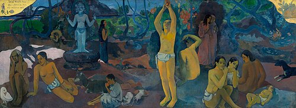
Définition
[modifier | modifier le code]La philosophie contemporaine occidentale, issue d’une tradition multiple, se présente sous des formes variées : tradition herméneutique et postkantienne en Allemagne, philosophie analytique dans les pays anglophones et dans une grande partie de l’Europe, tradition phénoménologique en Europe continentale[31]. Certains remettent fortement en cause la tradition philosophique et ses présupposés telle la philosophie féministe, la déconstruction de Derrida ou de Heidegger. Ces courants forment autant de pratiques différentes et d'opinions divergentes sur la nature de la philosophie, qui interdisent de donner une définition unique acceptable par tous. S'il y a aujourd'hui plusieurs traditions philosophiques, aucune ne peut prétendre résumer l'activité philosophique à elle seule, ni décrire l'activité philosophique de façon consensuelle.
Les difficultés à définir la philosophie sont en outre de nature épistémologique, car il est difficile de délimiter rigoureusement méthodes, thèmes et objets de la philosophie. Historiquement, elle a pu en effet s'inspirer d'autres disciplines (des mathématiques, voire des sciences positives). Pourtant, elle n'a jamais réussi à développer une méthode ou un ensemble de méthodes qui auraient réussi à s'imposer parmi les philosophes (comme la méthode expérimentale s'est imposée en physique et en chimie par exemple). En outre les amalgames entre la philosophie et d'autres disciplines sont favorisés par une tradition de philosophes aux intérêts très divers. Ainsi Aristote aura été aussi bien logicien, que philosophe ou naturaliste. Déterminer le philosophe par sa fonction sociale n'est donc pas aisé. La plupart des activités autrefois appartenant à la discipline sont devenues aujourd'hui autonomes (psychologie, sciences naturelles, etc.), et la part propre de la philosophie s'est réduite.
Mais il est également délicat de déterminer l'essence de la philosophie occidentale, soit parce que son statut dans la société est lui-même difficile à cerner, soit qu'elle a été ramenée à d'autres disciplines apparemment proches. Dès l'Antiquité, par exemple, Socrate était confondu dans Les Nuées d'Aristophane avec les sophistes, que Platon nous présente pourtant comme ses adversaires dans ses dialogues.
Emmanuel Kant ramenait le domaine de la philosophie à quatre questions : « Que puis-je savoir ? Que dois-je faire ? Que m’est-il permis d’espérer ? Qu’est-ce que l’homme ? »[5].
Les méthodes de la philosophie occidentale
[modifier | modifier le code]On peut dans une première approche, délimiter en creux un certain nombre de méthodes et de principes heuristiques qui caractérisent au moins en partie la philosophie.
Délimitations négatives de la méthode
[modifier | modifier le code]D'une part la philosophie ne recourt pas à la méthode expérimentale. La philosophie, en effet, à la différence de la physique, de la chimie ou de la biologie, n'a jamais vraiment intégré le processus d’expérimentation dans son outillage heuristique. Ceci est évident pour la philosophie antique et médiévale qui ne connaissait pas l'expérimentation. Même les grands philosophes qui se sont illustrés comme scientifiques (Descartes, Pascal, Leibniz pour ne citer qu'eux) ont toujours distingué leur travail dans le domaine scientifique et dans le domaine philosophique. Certains philosophes comme Kant ou Wittgenstein[N 1] ont même vu dans l’absence d’expérimentation en philosophie une caractéristique épistémologique essentielle de cette discipline et ont refusé toute confusion avec les sciences expérimentales[N 2].
D’autre part la philosophie n'est pas, par essence, une science reposant sur l'observation empirique à la différence de la sociologie ou des sciences politiques par exemple. Il ne faut naturellement pas croire que la philosophie peut ignorer les données empiriques les plus évidentes. Mais traditionnellement la philosophie ne veut pas se limiter à un simple catalogue de faits et entreprend pour cela un vrai travail de théorisation voire de spéculation. Ainsi, par exemple, même si Aristote a recueilli les constitutions des cités grecques de l'époque, il a voulu dans La Politique et dans l’Éthique à Nicomaque analyser les structures de la cité d'un point de vue théorique.
Enfin, la philosophie, à la différence des mathématiques ou de la logique formelle, ne s’est jamais décidée à travailler uniquement au moyen de symboles formels, bien que Leibniz ait pu rêver résoudre les problèmes philosophiques au moyen d’un calcul logique universel[32]. Et si la philosophie analytique contemporaine est impensable sans la logique mathématique, elle utilise encore massivement le langage naturel.
Caractéristiques de la méthode de la philosophie
[modifier | modifier le code]{kind=link}
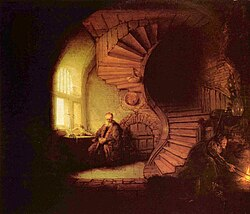
Malgré les difficultés que comporte cette entreprise, il est possible de distinguer certaines grandes caractéristiques positives de la méthode philosophique. La philosophie se comprend comme un travail critique. C'est une de ses définitions les plus courantes. Cette critique n’est cependant jamais purement et simplement négative. Elle a pour but de créer de nouvelles certitudes et de corriger les fausses évidences, les illusions et erreurs du sens commun ou de la philosophie elle-même. Socrate, par exemple, interrogeait ses contemporains et les sophistes afin de leur montrer leurs contradictions et leur incapacité à justifier ce qui leur semblait évident[33]. Descartes[34] est à l'époque moderne le meilleur représentant de cette conception de la philosophie, car, selon lui, seul un doute radical et général pouvait être le fondement d'une pensée parfaitement rigoureuse et indubitable.
La philosophie est souvent caractérisée comme un travail sur les concepts et notions, un travail de création de concepts permettant de comprendre le réel, de distinguer les objets les uns des autres et de les analyser, mais aussi un travail d'analyse des concepts et de leurs ambiguïtés[35]. Elle a très tôt[36] reconnu les problèmes que posent les ambiguïtés du langage. De nos jours la philosophie analytique donne elle aussi une grande place à ce problème.
En outre, à la différence des sciences, la délimitation des méthodes et du domaine de la philosophie fait partie de la philosophie elle-même. Chaque penseur se doit d'indiquer quels problèmes il souhaite éclairer, et quelle sera la méthode la plus adaptée pour résoudre ces problèmes. Il faut en effet bien voir qu'il y a une unité profonde des problèmes philosophiques et de la méthode philosophique. Il ne faut donc pas voir l'instabilité des méthodes et des thèmes philosophiques comme une faiblesse de la discipline, mais plutôt comme un trait caractéristique de sa nature. Ainsi, la philosophie est une sorte de retour critique du savoir sur lui-même, ou plus précisément une critique rationnelle de tous les savoirs (opinions, croyances, art, réflexions scientifiques, etc.), y compris philosophiques - puisque réfléchir sur le rôle de la philosophie c'est entamer une réflexion philosophique[37].
{kind=link}
Enfin, la philosophie est une discipline déductive et rationnelle. Elle n'est pas simple intuition ou impression subjective, mais demeure inséparable de la volonté de démontrer par des arguments et déductions ce qu’elle avance : elle est volonté de rationalité. C'est même la rupture des présocratiques avec la pensée religieuse (mythologie) de leur époque, et leur rapport aux dieux grecs qui est considérée traditionnellement comme le point marquant de la naissance de la philosophie. Ce souci de démontrer et de livrer une argumentation se retrouve au cours de toute l'histoire de la philosophie. Qu'on songe aux discussions éristiques durant l'Antiquité, à l'intérêt que portent les philosophes à la logique depuis Aristote, mais aussi, au Moyen Âge, au souci de donner à la philosophie la rigueur démonstrative des mathématiques (comme chez Descartes ou Spinoza) ou à l'importance qu'accorde la philosophie analytique de nos jours à la rigueur et à la clarté argumentatives. Malgré cette tendance profonde, la philosophie contemporaine a vu se développer une critique radicale de la raison, que ce soit chez Nietzsche, Heidegger, ou encore Adorno : la rationalité même s'est donc trouvée mise en débat par la philosophie[38].
Les branches de la philosophie occidentale
[modifier | modifier le code]La philosophie est loin d’être un domaine de connaissances bien délimité au sens où les problèmes auxquels elle se confronte sont d’une extrême variété. Elle étudie de nombreux objets, certains proches, c'est pourquoi sa subdivision en différentes branches est problématique et relève de l'arbitraire. De plus, si des pans entiers de la philosophie sont apparus au XXe siècle, certains domaines se sont détachés très nettement de la philosophie à l'époque moderne. La physique, par exemple, était considérée comme appartenant à la philosophie jusqu’au XVIIIe siècle. Mais le détachement n'est pas toujours aussi net ; ainsi la science politique, considérée comme une ancienne branche de la philosophie devenue autonome, entretient un dialogue permanent avec la philosophie politique (qui n'est donc pas morte). De même, la biologie, qui a longtemps été entravée par son appartenance à la philosophie avec les thèses finalistes, mécanistes, et vitalistes, revient par une porte dérobée. En effet, au début du XXIe siècle le développement des biotechnologies a pour corollaire l'apparition d'un nouveau champ d'étude philosophique : la bioéthique.
Malgré ces difficultés, les branches suivantes se distinguent aujourd'hui car chacune a un objet propre bien délimité qu'elle soumet à des questionnements spécifiques (et notamment ceux indiqués ici) :
- la métaphysique et ses diverses branches (« Qu'est-ce que la réalité ? », « Y a-t-il des réalités immatérielles ? », « Dieu existe-t-il ? », « L'âme existe-elle ? Est-elle immortelle ? Incorporelle ? ») ;
- l'ontologie, rattachée ou non à la métaphysique selon les interprètes (« Qu'est-ce que l'être ? », « Pourquoi y a-t-il de l'être plutôt que rien ? ») ;
- la philosophie de la religion, partiellement rattachée à la métaphysique puisqu'elle tente de définir le divin et pose la question de l'existence de Dieu, qu'elle double d'une interrogation sur la nature du sacré en général ;
- la philosophie morale ou l'éthique : discipline pratique et normative permettant de définir la meilleure conduite pour chaque situation: (« Quelle est la fin des actions humaines ? », « Le bien et le mal sont-ils des valeurs universelles permettant de définir cette fin ? ») ;
- la philosophie de l'art ou l'esthétique (« Qu'est-ce que le beau ? », « Qu'est-ce que l'art ? ») ;
- la philosophie des valeurs, ou axiologie, qui regroupe l'éthique et l'esthétique ci-dessus ;
- la philosophie de l'esprit (« Quelles sont les relations entre corps et esprit ? », « Comment fonctionne la cognition ? ») ;
- la phénoménologie, dont la méthode est de partir des expériences humaines pour appréhender la réalité telle qu'elle se donne, à travers les phénomènes ;
- la philosophie de la logique ;
- la philosophie politique (« D'où peut provenir la légitimité du pouvoir ? », « Quel est le meilleur régime politique ? », « La morale peut-elle et doit-elle guider l'action politique ? ») ;
- la philosophie du droit (« Quelles sont les relations entre droit et justice ? », « Comment naissent les normes juridiques ? », « Selon quels critères faut-il les juger ? ») ;
- la philosophie de l'action (« La liberté est-elle illusoire ? ») ;
- la philosophie du langage (« Quelle est l'origine du langage ? », « En quoi le langage se distingue-t-il d'autres systèmes de communications ? », « Quelles relations entretiennent langage et pensée ? ») ;
- la philosophie de l'histoire (« L'histoire est-elle régie par des lois, une nécessité, ou est-elle le fruit abscons de la contingence ? ») ;
- l'épistémologie qui est littéralement l'étude de la science et la connaissance. Aussi appelé théorie de la connaissance ou gnoséologie;
- la gnoséologie (« D'où provient la connaissance ? ») ;
- la théorie de la connaissance (« Qu'est-ce que la vérité ? »).
Histoire de la philosophie occidentale
[modifier | modifier le code]{kind=link}
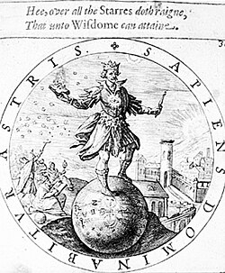
Si la philosophie a une longue histoire, il convient de distinguer la pratique de la philosophie de l'étude simple des doctrines passées. Parfois atténuée, voire effacée, cette distinction est pourtant cruciale. Nombre de penseurs en appellent aux philosophies antérieures pour les appuyer, s'en inspirer, ou encore les critiquer : il y a là un appel à l'histoire et à un fond culturel commun, mais ça ne fait pas de la philosophie une discipline historique. La pratique philosophique n'étant pas uniquement une glose sur la philosophie des époques précédentes, il faut la distinguer de l'histoire de la philosophie.
L’histoire de la philosophie consiste à tenter de reconstruire, de comprendre, d’interpréter, voire de critiquer, les positions et thèses de penseurs comme Platon, Thomas d’Aquin, Hegel, etc. Il s'agit moins d'évaluer la pertinence philosophique ou l'intérêt actuel de ces philosophes que de savoir ce qu'ils ont vraiment dit, et de restituer leurs pensées dans leurs contextes d'apparition. Ce travail d'étude porte également sur des courants philosophiques (le scepticisme antique, le néokantisme), ou des questions débattues au cours de l’histoire (le dualisme de l’âme et du corps, la querelle des universaux) appartiennent elles aussi à l’histoire de la philosophie.
{kind=link}
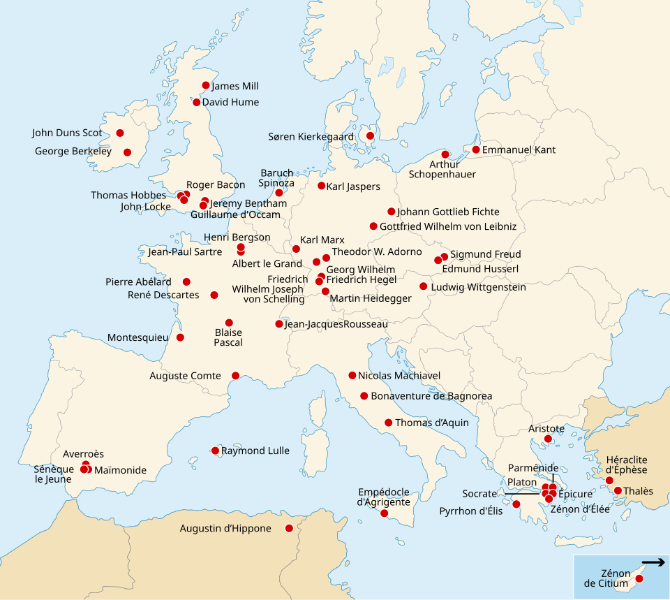
Frise chronologique
[modifier | modifier le code]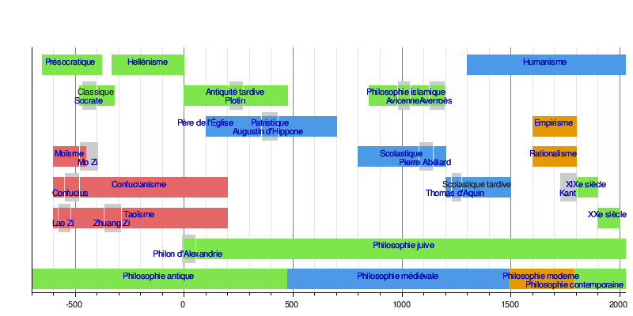
Philosophie antique
[modifier | modifier le code]Période grecque
[modifier | modifier le code]La philosophie grecque a connu trois grandes périodes[39] :
- la période présocratique (fin du VIIe siècle av. J.-C.), précédant Socrate (certains d'entre ces Présocratiques furent des contemporains de ce dernier), qui comprend tous les penseurs et leurs conceptions du monde. Ils sont considérés comme les fondateurs de la tradition philosophique occidentale ;
- la période grecque classique (Ve siècle av. J.-C.), qui commence avec Socrate à Athènes et se poursuit avec Platon, Diogène et Aristote. Ce même siècle est également celui de la sophistique représentée par Gorgias et Protagoras, entre autres ;
- après les conquêtes d'Alexandre le Grand, vient ce que l'on a nommé la période hellénistique : Épicure, les stoïciens ou les sceptiques qui sont les penseurs les plus importants de cette époque.
{kind=link}
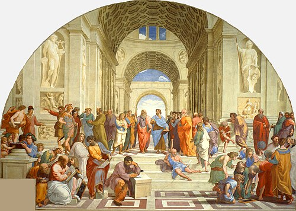
La philosophie grecque se caractérise par le fait qu'elle est dominée par l'éthique, par la question « comment bien vivre ? » et plus particulièrement par celles de la vertu et du bonheur. L'importance de ce thème apparaît évidente à la lecture des dialogues de Platon, des textes d'Aristote, des Stoïciens ou d'Épicure. La conséquence de cette tendance est que la philosophie était comprise comme une façon de vivre et non pas uniquement comme un discours théorique (même si ce dernier ne saurait être ignoré, naturellement) ce qui est particulièrement frappant chez un Socrate, un Diogène ou chez les Stoïciens.
Les deux autres grands domaines de la recherche des penseurs antiques sont d'une part la cosmologie et la physique (ce qu'on a longtemps nommé philosophie naturelle), d'autre part la théorie de la connaissance parfois liée à la logique. Ainsi, la question fondamentale qui occupait les philosophes présocratiques était la question du principe de toute chose. Au travers d'un mélange d'observations empiriques et de spéculations, ils tentèrent de comprendre la nature et ses phénomènes. Ainsi, le premier philosophe connu, Thalès, tenait l'eau pour le principe de toute chose. Platon dans le Timée (livre dont l'influence fut primordiale au cours de l'histoire de la philosophie) cherche lui aussi à expliquer la naissance du monde, et imagine un démiurge qui aurait créé notre univers en reproduisant le modèle éternel que sont les idées. Enfin, la Physique d'Aristote, tout comme la lettre à Hérodote d'Épicure ou la physique stoïcienne montrent le vif intérêt des anciens pour la connaissance de la nature (en grec φύσις / phúsis).
La théorie de la connaissance et la logique étaient elles aussi essentielles pour les philosophes de l'Antiquité. Les Sophistes défendent souvent une thèse qu'on peut qualifier de relativiste car elle revient à nier l'existence d'une connaissance objective et universellement valable. « Rien n'est vrai (en soi). Pour chacun la chose apparaît, telle qu'elle apparaît, selon les circonstances et l'environnement »[40]. Tel est le sens de la célèbre formule : la personne humaine est la mesure de toute chose. Platon, à la suite de Socrate qui affirmait l'existence d'une science objective des valeurs et des normes morales, développe une théorie de la connaissance explicitée dans la République et le Théétète. Platon fait en effet la distinction entre la simple opinion (ou doxa, empirique et sans fondement) et le véritable savoir philosophique, qui ne peut être acquis que par un long parcours d'apprentissage des mathématiques, de la dialectique et de ce qu'on appelle la théorie des Idées[41]. Épicure, quant à lui, développe toute une théorie empiriste de la connaissance afin de déterminer les critères que doit remplir une connaissance pour être vraie. Enfin, aussi bien Aristote que les Stoïciens ont fondé une logique formelle, sous la forme, respectivement, de la syllogistique et d'une logique des propositions.
Rome et l'Antiquité tardive
[modifier | modifier le code]{kind=link}
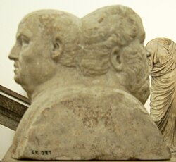
Les Romains, dominant petit à petit le contour de la mer Méditerranée (la Mare nostrum), s'approprient ensuite l'héritage grec des différents courants philosophiques. Certains auteurs romains nous ont légué à travers le temps des principes et concepts de philosophie grecque qui aujourd'hui manquent par faute de textes originaux ou de copies : c'est le cas de Lucrèce (Ier siècle av. J.-C.), avec son œuvre poétique De rerum natura, explicitant l'épicurisme (seules trois lettres d'Épicure nous sont parvenues), malgré le rejet de la poésie par les Épicuriens. Il est en effet probable qu'il ait eu sous les yeux des traités aujourd'hui perdus[42]. Nous devons probablement à Cicéron, philosophe de première importance, d'avoir sauvé le poème de Lucrèce. Premier écrivain ayant rédigé des ouvrages philosophiques en latin, Cicéron ne peut être rattaché à aucune école, faisant preuve d'éclectisme, mais il a toutefois largement contribué à répandre la philosophie stoïcienne et épicurienne dans le monde romain.
Les Stoïciens sont représentés par deux grands hommes de pouvoir : Sénèque (Ier siècle) et Marc Aurèle (IIe siècle). Le premier de ces deux personnages est célèbre d'une part de sa proximité (qui lui sera fatale) avec l'empereur Néron, d'autre part parce qu'il est considéré comme le représentant plus complet du stoïcisme (bien que s'en émancipant), notamment par l'entremise de ses œuvres, à savoir deux de ses Dialogues (De Brevitate vitæ, De la brièveté de la vie ; De Vita beata, Sur la vie heureuse). Le second Stoïcien est Marc Aurèle, empereur romain. Influencé par Épictète, il développe dans son fameux Pensées à moi-même les plus hautes valeurs qui doivent relever de l'être humain : sagesse, justice, courage et tempérance.
Le néoplatonisme, mouvement fondé par Plotin (IIIe siècle), voulait concilier la philosophie de Platon avec des idées conceptuelles de l'Égypte et de l'Inde[43]. Il y eut deux phases concernant le néoplatonisme durant l'Antiquité, et une autre plus locale lors de la Renaissance. De consonance bien plus mystique que les Idées platoniques, Plotin voit la philosophie comme un cheminement de l'âme vers le principe de transcendance du Bien, donnant pour but à ce système, l'union avec le principe premier, originel, Dieu.
Augustin d'Hippone, ou saint Augustin (IVe siècle), personnage le plus important pour la propagation du christianisme après saint Paul, laisse une abondante trace écrite qui sera d'une influence décisive sur le devenir de l'Occident, et de ce point de vue, sur de nombreux philosophes et théologiens. Sa pensée, l'augustinisme (nommée ainsi après sa mort), consacre l'idéalisme platonicien.
Philosophie médiévale
[modifier | modifier le code]La philosophie médiévale d'Occident et du Proche-Orient sont issues du même courant. Ce sont les penseurs chrétiens et musulmans, puis entre musulmans eux-mêmes, qui en cherchant des arguments convaincants vont faire appel à la philosophie antique. Du Moyen-Orient, principalement musulman, vont naître plusieurs écoles de pensée et de méthode qui seront reprises plus tard en Occident, alors que les sociétés musulmanes finiront par étouffer les idées originales nées durant cette période[44].
La philosophie médiévale en Occident est caractérisée par la rencontre du Christianisme et de la philosophie. La philosophie médiévale est une philosophie chrétienne, à la fois dans son intention et par ses représentants qui sont presque tous des clercs. Un thème fondamental constant est à partir de là aussi le rapport entre la foi et la raison. Mais ceci ne signifie pas que la pensée se manifeste désormais selon une unité dogmatique. Le conflit des directions philosophiques entre elles d'une part et les condamnations de thèses par les autorités ecclésiastiques d'autre part, montrent bien que la pensée se déploie sur des voies très autonomes et divergentes.
Malgré sa grande diversité et sa longue période de développement, elle se manifeste cependant une certaine unité dans la présentation des questions philosophiques : discussion des auteurs du passé, confrontation avec les Saintes Écritures et les textes des Pères de l'Église, afin d'examiner toutes les facettes d'un même problème, dont à la fin l'auteur proposait la résolution.
La première période coïncide avec l'Antiquité : la Patristique (du IIe au VIIe siècle environ) est caractérisée par les efforts des Pères de l'Église (patres) pour édifier la doctrine chrétienne à l'aide de la philosophie antique, et de l'assurer ainsi à la fois contre le paganisme et contre la gnose. Le représentant de la philosophie chrétienne le plus important et ayant eu le plus d'influence dans l'Antiquité est saint Augustin. Son œuvre, influencée par le néoplatonisme, est une des principales sources de la pensée médiévale.
Après la fin de l'Antiquité, les textes transmis sont, durant des siècles, conservés et recopiés dans les monastères. Pourtant, paradoxalement, la pensée philosophique perd son autonomie et sa force propre. La date symbolique de 529 apr. J.-C. voit la fermeture de l'École néoplatonicienne d'Athènes ordonnée par Justinien. Les maîtres de l'Académie (Damascios, Simplicios de Cilicie, Priscien de Lydie, Eulamios de Phrygie, Hermias de Phénicie, Diogène de Phénicie, Isidore de Gaza) décident d'aller chercher asile à la cour du roi des Perses à Ctésiphon puis à Harran où se maintient une secte philosophico-religieuse se réclamant du néo-platonisme et de l'hermétisme. La conversion des philosophes de l'École néoplatonicienne d'Alexandrie au christianisme marque la disparition de cette école en 541 apr. J.-C.
La période qui s'ouvre à partir du IXe siècle est appelée généralement la scolastique. L'appellation de Scolastiques (scola équivaut à école) désignent ceux qui s'occupent scolairement des sciences, et particulièrement les professeurs qui travaillent dans les écoles des diocèses ou de la cour fondée par Charlemagne, et plus tard, dans les Universités. Mais avec le terme de scolastique, c'est avant tout une méthode qui est évoquée. Les questions sont examinées et résolues rationnellement suivant le pour et le contre. Ce qui caractérise la scolastique, c'est un retour aux textes anciens, leur analyse critique et leur message.
Les Universités, fondées à partir du XIIe siècle, deviennent le centre de la vie intellectuelle. Le développement du savoir dans les quatre facultés fondamentales suivantes : philosophie (Septem artes liberales), théologie, droit, et médecine. Les « disputationes » qui ont lieu dans les Universités suivaient le strict schéma de la méthode scolastique. À la fin, sa sclérose formelle, fut le point de départ de la critique qui se réalisa à la Renaissance contre cette forme de philosophie. Les sources antiques auxquelles s'abreuve la scolastique sont avant tout : saint Augustin ; la tradition néoplatonicienne (avec ici les écrits d'un auteur inconnu qui se nomme Denys l'Aréopagite) ; Boèce qui transmet la logique aristotélicienne ; plus tard, l'ensemble des textes d'Aristote.
On distingue les périodes suivantes :
- au cours de la première scolastique (XIe au XIIe siècle) débute l'élaboration de la méthode proprement scolastique. À ce moment se propage la querelle des Universaux qui est aussi le thème du siècle suivant. La question est de savoir si, à toutes les déterminations universelles (genres et espèces, par exemple l'espèce humaine) correspond une réalité indépendante de la pensée, ou si elles n'existent que dans la pensée en soi. L'influence du monde arabe est très importante pour le développement futur de la philosophie. Dans les années 800-1200, la culture islamique a permis la transmission de la philosophie et de la science grecques. C'est de cette manière qu'une plus grande partie d'écrits que celle dont disposait le Moyen Âge chrétien devint accessible. Ce fut le cas des œuvres complètes d'Aristote ;
- la nouvelle réception d'Aristote imprègne l'image de la haute scolastique (environ XIIe au XIIIe siècle). Aucun penseur ne parvient à une connaissance complète des principes d'Aristote. C'est sur ce point que s'opposent la pensée franciscaine, orientée vers l'Augustinisme, et la pensée aristotélicienne des dominicains. Thomas d'Aquin a repris la vaste entreprise systématique visant à l'union de l'aristotélisme et de la pensée chrétienne. Le caractère antinomique de certains enseignements d'Aristote avec le dogme chrétien conduisit, de la part de l'Église, à une interdiction temporaire de certains écrits et à la condamnation d'une série de thèses philosophiques. Avec Maître Eckhart, la tradition de la mystique médiévale parvint à son apogée ; il s'agit de la voie vers la contemplation intérieure et de l'union avec le divin ;
- les représentants plus lointains sont Henri Suses, Jean Tauler et Jean Gerson dans la scolastique tardive (XIVe siècle), qui s'impose avec Guillaume d'Occam et la critique des systèmes métaphysiques des anciennes écoles (via antiqua). La nouvelle voie (via moderna, appelée aussi le nominalisme) va de pair avec un épanouissement des sciences naturelles (Nicolas d'Oresme, Jean Buridan) (Atlas de la philosophie, Livre de poche).
Philosophie islamique
[modifier | modifier le code]Les sources de la philosophie islamique proviennent à la fois de l'islam en lui-même (Coran et Sunna) ainsi que de la philosophie grecque, iranienne préislamique et indienne.
C'est en cherchant à affiner la doctrine de l'islam et à interpréter correctement les hadiths, tout en extrapolant sur les questions religieuses qui n'avaient pas été explicitement tranchées dans le Coran, que naît la méthode de l'ijtihad. Avec elle s'ouvrent les premiers débats philosophiques et théologiques en islam, notamment entre les partisans du libre arbitre ou Qadar (de l'arabe : qadara, qui a le pouvoir), et les djabarites (de djabar : force, contrainte), partisans du fatalisme.
La théologie en islam doit répondre à des interrogations concernant la théodicée, l'eschatologie, l'anthropologie, la théologie négative et la religion comparée. Plusieurs courants philosophiques existent en terre d'islam :
- la philosophie hellénistique de l’islam (falsafa) ;
- la théologie dialectique (kalâm) ;
- le soufisme, théorie ésotérique de l'islam ;
- les écoles littéralistes (Atharisme comme pour le madhhab Hanbalisme).
La Madhhab motazilite est née d'une opposition aux vues traditionnelles des musulmans partisans du califat. Puis, s'intéressant aux attaques que subissait l'islam de la part des non-musulmans, ces Motazilistes devinrent rapidement obsédés par le débat avec les autres théologies et courants de pensée à l'intérieur de l'islam lui-même.
Le calife Al-Mamun fait du motazilisme la doctrine officielle en 827 et crée la Maison de la sagesse en 832. Très rapidement, la philosophie grecque est introduite dans les milieux intellectuels persans et arabes. L'École péripatétique commence à avoir des représentants parmi eux : ce fut le cas d'Al-Kindi, d'Al-Farabi, d'Ibn Sina (Avicenne) et d'Ibn Rushd (Averroès).
Ceux qui cherchaient par une démonstration philosophique à conforter et démontrer le bien-fondé de leur foi religieuse ont été recrutés par Hunayn ibn Ishaq, un arabe chrétien qui dirige la Maison de la sagesse dans les années 870. Ils ont collecté, traduit et synthétisé tout ce que les autres cultures grecque, indienne, perse ont pu produire avant d'entreprendre les commentaires sur ces œuvres. C'est ce travail qui forme les bases de la philosophie musulmane du IXe et Xe siècle. Ceux qui utiliseront cette méthode dite Ilm-al-Kalâm basée sur la dialectique grecque seront appelés mutakalamin. En réponse au motazilisme, Abu al-Hasan al-Ash'ari, initialement un motaziliste lui-même, développe le Kalâm et fonde l'école de pensée acharite qui s'appuie sur cette méthode. Ainsi le kalâm et la falsafa influenceront plusieurs madhhabs.
Sous le califat des Abbassides, un certain nombre de penseurs et de scientifiques, et parmi eux de nombreux musulmans non-sunnites ou des non-musulmans (en particulier des lettrés chrétiens syriaques, ceux-ci les ayant auparavant traduits du grec en syriaque, puis en arabe[45]), jouent un rôle dans la transmission à l'Occident des savoirs grec, indien, et d'autres sagesses préislamiques, mésopotamiennes et perses. Trois penseurs spéculatifs, les deux Persans al-Farabi et Avicenne, et l'Arabe al-Kindi, combinent l'aristotélisme et le néoplatonisme avec d'autres courants dans l'Islam. Ils furent considérés par beaucoup comme déviants par rapport à l'orthodoxie religieuse, et certains les jugèrent même comme des philosophes non-musulmans.
Les ismaéliens ne sont pas à l'écart de l'influence de la philosophie néoplatonicienne et plusieurs penseurs collaborent pour produire à Basra une encyclopédie : la Ikhwan al-Safa.
Le XIIe siècle voit le paroxysme de la philosophie pure et le déclin du Kalâm. Ce renforcement de la philosophie doit être attribué, pour une large part au Persan Al-Ghazali et au Juif Juda Halevi. En émettant des critiques, ils ont produit par réaction un courant favorable à la philosophie par une mise en cause des concepts et en rendant leurs théories plus logiques et plus claires. Ibn Bajjah et Averroès ont produit les œuvres les plus conséquentes de la pensée islamique. Averroès se démarque fortement de l'orthodoxie. La fureur des orthodoxes est en effet telle que le débat n'est plus possible. Les orthodoxes s'en prennent sans distinction à tous les philosophes et font brûler les livres. Le débat se poursuivra, mais en Occident, par l'intermédiaire des Juifs.
Certains considèrent Ibn Khaldoun comme le dernier penseur important de ce temps philosophique islamique ; il vécut au XIVe siècle. Il fut, avec son œuvre principale Al-Muqqadima, notamment un précurseur de la sociologie[C'est-à-dire ?][réf. nécessaire].
Philosophie chrétienne
[modifier | modifier le code]{kind=link}
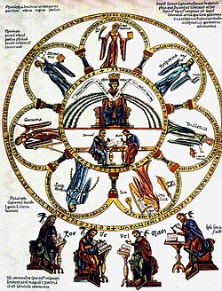
Souvent caricaturée et décriée, la philosophie médiévale s'étend sur la vaste période qui sépare la philosophie antique tardive de la philosophie moderne. Bien loin de se résumer à l'image négative qu'a aujourd'hui la scolastique, elle présente toute une variété de penseurs d'inspirations sensiblement différentes[46].
D'une part le Moyen Âge est une des périodes les plus fécondes en ce qui concerne la logique. Certaines lois logiques ont été connues dès le Moyen Âge (par exemple Pierre d'Espagne connaissait déjà ce qu'on appellera plus tard la loi de De Morgan) avant d'être ensuite oubliées. C'est surtout la philosophie de la logique qui connut un développement important. Les penseurs médiévaux se concentrèrent plus particulièrement sur la célèbre Querelles des Universaux, dont le point de départ fut une remise en cause de la théorie des Idées platoniciennes. Elle fut animée entre autres par Abélard[47], Albert le Grand et Guillaume d'Ockham.
D'autre part le Moyen Âge fut aussi un âge de redécouverte de la philosophie antique à partir du XIe siècle[48]. La traduction en latin du corpus aristotélicien modifiera ensuite grandement la donne, et contribuera à réaffirmer Aristote comme l'un des philosophes les plus influents de l'histoire. Mais cette redécouverte ne sera possible que par l'intermédiaire des Syriaques de la Mésopotamie et de la Syrie, désireux de s'instruire et souhaitant qu'ils servent à l'exégèse des textes religieux. Les conquérants arabes se virent remettre les ouvrages traduits, ce qui permit le passage des œuvres en Occident[49]. La tradition de commentaire des textes est aussi très présente : le commentaire des Sentences de Pierre Lombard sera pour longtemps un exercice canonique de l'époque. Quant aux commentaires d'Aristote par saint Thomas d'Aquin, au XIIIe siècle, ceux-ci feront longtemps autorité et constitueront un modèle du genre.
Enfin, la philosophie médiévale est très liée à l'Église, et les réflexions philosophiques ont souvent un fond religieux et théologique plus ou moins prégnant. Les philosophes du Moyen Âge, qui avaient tous reçu une formation en théologie, se basaient sur les textes bibliques et tentaient souvent de concilier les enseignements de la Bible avec les écrits des philosophes antiques. Cette réconciliation prit la forme d'une subordination de la philosophie à la théologie, ou plutôt d'une complémentarité, les Vérités révélées des Écritures primant sur la « lumière naturelle » de la Raison, l'une n'allant jamais contre l'autre. La grande synthèse de la foi et de la raison, c'est-à-dire d'Aristote, de la théologie et de la Révélation fut réalisée au XIIIe siècle, notamment par des penseurs comme Thomas d'Aquin.
Philosophie juive
[modifier | modifier le code]Deux réactions eurent lieu chez les Juifs face à la philosophie grecque : alors que les Juifs restés en Judée se rebellaient contre l'hellénisation, d'autres s'installaient en terre grecque, à Alexandrie, et produisaient des penseurs qui, à l'exemple de Philon, n'hésitaient pas à confronter les deux langages.
Représentant typique du judaïsme hellénisé d'Alexandrie, Philon ne parle probablement pas l'hébreu. Il rêve de concilier religion et philosophie, révélation et raison : la philosophie est le moyen de défendre et de justifier les vérités révélées du Judaïsme. Celles-ci sont pour lui fixées et déterminées, et la philosophie permet d'en approcher.
La Bible hébraïque est pour lui un ouvrage de législation religieuse parsemé de leçons d'éthique, Moïse un précurseur de Solon ou Lycurgue, les commandements bibliques hébraïques inculquent à la personne humaine les fondements du stoïcisme, et accordent son rythme aux rythmes cosmiques et universels. Le Shabbat vise à abolir toute barrière sociale, la casheroute à enseigner la modération et la frugalité.
Il fallut l'expansion du monde de l'Islam pour que la philosophie revienne frapper en force aux portes du monde juif. Elle avait désormais un tout autre visage :
- d'un côté, les Mutazilites s'en faisaient un outil afin d'étudier rationnellement les Textes sacrés ;
- de l'autre côté, le néoplatonisme avait été adapté puis adopté : l'émanationnisme, la perfection infinie de l'Un, la montée de l'âme, etc., sont des thèmes très proches des croyances religieuses, permettant de s'essayer à la fois à la spéculation rationnelle et à la spéculation mystique.
L'un des penseurs les plus marquants du Judaïsme, Juda Halevi, se leva alors pour combattre la philosophie. Cependant, Juda Halevi ne cessa de se « mouvoir dans l'univers mental de ses adversaires » pour les contrer, alors que son contemporain, Abraham ibn Dawd Halevi tentait d'introduire ses contemporains aux idées Aristote.
L'aristotélisme trouva son représentant dans le géant de la philosophie juive, Maïmonide. Il changea littéralement le champ de vision du Judaïsme. Il fut l'« Aigle de la Synagogue », qui écrivit le Commentaire sur la Mishna et le Mishné Torah, le « Prince des Médecins » et surtout un des plus grands érudits que connut le Judaïsme. Auteur du Guide des Égarés dont le but est de résoudre la difficulté qui se présente à l’esprit d’un juif croyant, concurremment nourri de réalités philosophiques, Maïmonide a réussi à expliquer les anthropomorphismes bibliques, à dégager la signification spirituelle cachée derrière les significations littérales et à montrer que le spirituel était la sphère du divin.
Philosophie moderne (1492-1789)
[modifier | modifier le code]{kind=link}

Par « philosophie moderne », il faut entendre les courants philosophiques qui se développent au cours de ce que les historiens appellent l'Époque moderne (1492-1789). Globalement, on peut distinguer la philosophie humaniste de la Renaissance et celle des Lumières.
L'humanisme (XVe siècle au XVIIe siècle)
[modifier | modifier le code]L’Humanisme est un courant de pensée qui apparaît pendant la Renaissance. Il consiste à valoriser l’Humanité, à la placer au centre de son univers. Dans cette optique, le principe de base de cette théorie est que la personne humaine est en possession de capacités intellectuelles potentiellement illimitées. La quête du savoir et la maîtrise des diverses disciplines sont nécessaires au bon usage de ces facultés. Il prône la vulgarisation de tous les savoirs, même religieux : pour certains humanistes, la parole divine doit être accessible à toute personne, quelles que soient ses origines, sa langue ou sa catégorie sociale.
Ainsi, cet Humanisme vise à lutter contre l’ignorance, et à diffuser plus clairement le patrimoine culturel, y compris le message religieux. Cependant l’individu, correctement instruit, reste libre et pleinement responsable de ses actes dans la croyance de son choix. Les notions de liberté (ce que l'on appelle le « libre arbitre »), de tolérance, d’indépendance, d’ouverture et de curiosité sont de ce fait indissociables de la théorie humaniste classique. L'Humanisme désigne toute pensée qui met au premier plan de ses préoccupations le développement des qualités essentielles de l'être humain.
La liste des philosophes d'inspiration humaniste comprend aussi bien Pétrarque que Léonard de Vinci, Jean Pic de la Mirandole, Charles de Bovelles, Montaigne, et bien plus tard Thomas Jefferson ou encore Albert Schweitzer ; ceci pour indiquer la longue portée, jusqu'à nos jours, de ce courant philosophique.
Les Lumières et l'avènement de la philosophie moderne (XVIIe et XVIIIe siècles)
[modifier | modifier le code]Elle est, d'une part, l'héritière de la pensée antique en bien des points. Descartes, Spinoza, Leibniz ou Hume (pour ne citer qu'eux) n'ont pas rompu entièrement les liens avec la philosophie des Anciens[réf. nécessaire]. Ils la connaissaient très bien[réf. nécessaire] et leur ont notamment emprunté leur vocabulaire. Mais d'autre part, les Modernes ont souvent compris leur propre travail comme une amélioration[réf. nécessaire] de ce que les philosophes de l'Antiquité avaient déjà accompli, ce qui les conduisit parfois à s'opposer à ces derniers.
Cette tentative « d'améliorer » la philosophie antique apparaît clairement dans la philosophie politique, une des grandes caractéristiques de la philosophie moderne étant en effet d'avoir renouvelé celle-ci. Machiavel ou Hobbes ont tous deux voulu fonder la philosophie politique comme science, en la séparant nettement de l'éthique (alors que cette dernière et la politique étaient inséparables chez les trois grands penseurs de l’Antiquité qu'étaient Socrate, Platon et Aristote). En outre, aussi bien Spinoza et Hobbes que Machiavel ont cherché à fonder la philosophie politique sur l'étude de la personne humaine telle qu'elle est — et non telle qu'elle devrait être comme le faisaient les Anciens.
Mais la philosophie moderne, au sens où nous l'avons délimitée, comprend aussi, dès la fin du XVIIe siècle, la philosophie des Lumières et le libéralisme. Le mot « philosophe » y prend le sens nouveau de « membre du parti philosophique » au fur et à mesure que se dessine une philosophie politique qui privilégie la tolérance. Des points de vue différents émergent cependant. Certains représentants des Lumières, tels que Voltaire et D'Alembert souhaitaient l'émergence de « despotes éclairés », des souverains lettrés et rationnels à même de régner selon les idées les plus modernes. Les Lumières anglo-saxonnes, composées notamment de Mandeville, Locke, Smith ou Jefferson, tenantes du libéralisme, prônent la liberté individuelle, la propriété privée, la liberté économique, le libre-échange et un pouvoir dirigé par l'élite possédante et cultivée, fût-elle élue par le peuple. Quant à Rousseau, bien que faisant partie des Lumières à divers égards, il critiquait la propriété privée comme étant la pourvoyeuse de «l'inégalité parmi les hommes » et souhaitait tendre à la démocratie directe.
{kind=link}
L'autre grande caractéristique de la philosophie moderne est l'importance qu'y joue la science, même s'il faut remarquer que la philosophie du XVIIe siècle privilégie plutôt les mathématiques et la physique (mécaniste), alors que les philosophes du XVIIIe siècle se tournent davantage vers la biologie. Les penseurs menaient en effet souvent une carrière de savant, ou nourrissaient en tout cas un vif intérêt pour la science. Leibniz et Descartes, notamment, étaient de grands savants, de même qu'un siècle plus tard Diderot développa des réflexions annonçant le transformisme. Du point de vue de la méthode, la philosophie s'inspire alors soit des mathématiques (tels Descartes et Spinoza), soit de la physique (Hobbes) ; ou bien elle tente de fonder une méthode applicable à tous les domaines du savoir : philosophie, physique, mathématiques, etc., par exemple pour Leibniz. La méthode de la philosophie s'inspire donc souvent de celle des sciences ou des mathématiques.
Enfin, en ce qui concerne la théorie de la connaissance, il est traditionnel de distinguer deux grands courants : le rationalisme (avec Descartes, Leibniz et Spinoza) et l'empirisme (Hume et Locke). De façon très schématique, les rationalistes affirment l'existence d’une connaissance indépendante de l'expérience, purement intellectuelle, universellement valable et indubitable. Les empiristes, eux, affirment que toute connaissance procède de l'induction et de l'expérience sensible. Ce sont souvent aussi des sceptiques (par exemple Hume) qui affirment qu'il n'existe aucune connaissance universellement valable, mais seulement des jugements nés de l'induction et que l'expérience pourra réfuter.
Kant défend une position originale dans cette discussion. Il affirme en effet à la fois la nécessité de l'expérience mais aussi des concepts et des formes de la sensibilité a priori pour la constitution de la connaissance. Sa thèse combine donc à la fois l'empirisme et le rationalisme. Kant, qui nie à la différence des rationalistes la possibilité d'une connaissance ne reposant pas sur l'expérience, distingue par la suite les choses en soi (connues sans le recours de l'empirie) et les choses pour nous (telles que nous les connaissons). Les premières sont inconnaissables pour nous : Dieu, la liberté et l'âme.
Philosophie contemporaine
[modifier | modifier le code]Le XIXe siècle
[modifier | modifier le code]{kind=link}
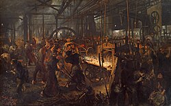
La philosophie du XIXe siècle se divise en des directions si différentes qu'elles ne se laissent pas ramener à un seul et unique concept. Elle comprend la philosophie romantique, l'Idéalisme allemand, le positivisme, la pensée socialiste et matérialiste de Marx, Feuerbach ou Proudhon, le pragmatisme ainsi que nombre de penseurs difficiles à classer tels Schopenhauer, Nietzsche et Kierkegaard ou encore plus tard Chestov.
Une partie de la philosophie et surtout de la philosophie allemande se comprend comme un dialogue critique mais aussi constructif avec la pensée kantienne : ce fut le cas de l'Idéalisme allemand, de Schopenhauer et de Nietzsche. Le but avoué étant de reprendre ce qui semblait le plus intéressant dans la philosophie de Kant et de la débarrasser de ce qui semblait être des restes d'une métaphysique dépassée.
Les courants philosophiques marqués par l'empirisme ont pris une autre direction comme le positivisme de Comte qui voulait dépasser la pensée métaphysique uniquement au moyen des sciences empiriques c'est-à-dire sans recourir aux explications métaphysiques. En Angleterre Bentham et Mill développèrent l'utilitarisme qui soumettait l'économie et l'éthique à un rigoureux principe de comparaison des avantages et des inconvénients et qui avec l'idée d'un bien-être pour tous (le principe du « plus grand bonheur au plus grand nombre ») joua un rôle fondamental.
L'économie et la philosophie politique furent marquées par Marx, Engels ou Proudhon qui voulaient améliorer profondément les conditions de vie des ouvriers par un bouleversement des structures économiques et politiques de leur époque que les philosophes avaient pour tâche de conceptualiser.
Il est en revanche difficile de classer toute une série de philosophes tels Schopenhauer, Kierkegaard et Nietzsche. Schopenhauer mettait en avant la puissance et la domination de la volonté sur la raison en s'inspirant des Upanishads, principes philosophiques constituant pour partie la pensée indienne des Veda, alors en vogue dans certaines universités européennes. Sa vision du monde pessimiste, profondément marquée par l'expérience de la souffrance, témoigne d'une influence védique et de l'idée bouddhiste de nirvāna. Nietzsche qui tout comme Schopenhauer accordait une grande importance aux arts, se désignait lui-même comme un immoraliste. Pour lui les valeurs de la morale chrétienne traditionnelle étaient l'expression de faiblesse et d'une pensée décadente. Il analysa les idées de nihilisme, de surhomme, et de l'éternel retour de la répétition sans fin de l'histoire. Kierkegaard était en bien des points un précurseur de l'existentialisme. Il défendait une philosophie imprégnée de religion et représentant un individualisme radical qui dit comment on doit se comporter en tant qu'individu singulier dans les différentes situations concrètes.
À la charnière du XIXe et du XXe siècle, la philosophie de l'éducation et la morale appliquée connaissent un essor particulier, portées par des figures comme Anne-Marie Grauvogel ou Clarisse Coignet, qui renouvellent l'approche pédagogique en liant instruction publique et réflexion philosophique[50].
Le XXe siècle
[modifier | modifier le code]{kind=link}
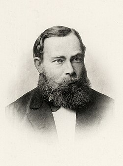
{kind=link}
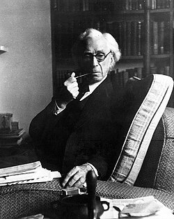
La philosophie du XXe siècle se caractérise elle aussi par une importante variété de doctrines, dominées globalement par deux grandes familles de pensée : la philosophie analytique et la phénoménologie.
La philosophie analytique, philosophie dominante de la seconde moitié de ce siècle, qui prend racines en Allemagne avec Frege, en Autriche avec Moritz Schlick et Rudolf Carnap, au Royaume-Uni avec Russell et Whitehead, et en Pologne avec l'École de Lvov-Varsovie (Tarski, Kotarbiński, Leśniewski, Łukasiewicz), est majoritaire dans l'ensemble des pays anglophones et dans une grande partie de l'Europe (Autriche, Allemagne, Pologne, Suisse, pays scandinaves, etc.). Elle se caractérise par un usage important de la logique mathématique et plus généralement par une grande attention portée au langage comme source d'illusions et de paralogismes. Elle a abouti à une reprise d'ensemble de nombreux problèmes philosophiques traditionnels tels que la nature de l'esprit et ses rapports au corps (voir philosophie de l'esprit), les problèmes relatifs à la nature de l'action (voir philosophie de l'action), l'essence et la fonction du langage naturel et formel (cf. la philosophie du langage et la philosophie de la logique). Ses représentants les plus importants sont Russell, Frege, Whitehead, Wittgenstein, Tarski, Leśniewski, Łukasiewicz, Ajdukiewicz, Davidson, Kenny, Austin, Searle, Ryle, Hintikka, Vuillemin[51].
L'autre grande tradition philosophique du XXe siècle est la phénoménologie, fondée par Husserl, dont les successeurs sont Heidegger, Sartre, Merleau-Ponty, Ingarden, Stein, Patočka, Ricœur ou Levinas. Pour Husserl, la phénoménologie est la science des phénomènes, c'est-à-dire la science des « vécus » de la conscience, s'opposant en cela au réalisme naïf (ou « attitude naturelle ») qui prétend faire la science des objets du monde extérieur. Il s'agit d'une science apriorique, ou « eidétique », c'est-à-dire d'une science qui décrit les essences des vécus de la conscience[52]. Elle aura ainsi pour objets, entre autres, la connaissance (Husserl), l'imagination (Sartre), la perception (Merleau-Ponty), l'existence humaine (Heidegger), la volonté (Ricœur).

{kind=link}

Le début du XXe siècle marque également le début de la psychanalyse, fondée par Freud, qui apporte une conception nouvelle de l'homme, contredisant la représentation traditionnelle de la conscience humaine : la psychanalyse fournit en effet un modèle théorique du psychisme humain impliquant la domination de l'inconscient sur la conscience, ainsi qu'une méthode d'investigation de ce dernier. Freud dit lui-même de sa discipline qu'elle constitue la troisième blessure narcissique de l'humanité. Même si Freud était un médecin neurologue, et non un philosophe, les conséquences philosophiques de sa doctrine (notamment sur la question de la liberté et de la responsabilité, et sur la place des pulsions et de la sexualité dans les conduites humaines) sont d'une telle ampleur que la plupart des philosophes du XXe siècle se sont intéressés à ses idées, pour les critiquer ou pour s'en inspirer (comme, en France, Alain, Sartre, Deleuze et Derrida[53]).
Le début du siècle voit également la diversification du corps philosophique avec les premières femmes obtenant le doctorat, telles que Hélène Metzger (reconnue pour ses travaux en histoire des sciences et chimie) ou Léontine Zanta, qui participent aux débats intellectuels de l'entre-deux-guerres malgré leur exclusion des chaires universitaires[50].
Sous l'influence des travaux du philosophe allemand Martin Heidegger[N 3], s'est développé dans la seconde partie du XXe siècle, surtout en France, la philosophie poststructuraliste et la déconstruction, qui reposent sur la remise en cause des concepts classiques de la métaphysique occidentale, par exemple ceux de « sujet » et « objet », de « sens », de « raison », de « conscience », mais encore sur un dépassement des conceptualités de la première moitié du XXe, psychanalytiques, phénoménologiques, linguistiques, etc. Les principaux représentants de cet « anti-courant » de pensée sont Michel Foucault, Gilles Deleuze, Félix Guattari, et Jacques Derrida. Si l'unité de ces pensées pose un problème, par leur forme même, qui les empêche de « faire école », les Américains les regardent comme un courant français original auquel ils ont donné le nom de French theory, et les regroupent plus globalement dans la philosophie postmoderne[54].
Martin Heidegger ouvre aussi la voie à l'herméneutique philosophique, qui a comme tâche de mettre en lumière les anticipations de sens de la compréhension de l'existence du Dasein. L'herméneutique est reprise par l'élève d'Heidegger, Hans-Georg Gadamer, qui s'intéressera plutôt à la compréhension à travers les sillons tracés par l'art, l'histoire et le langage. Du côté de la France, l'herméneutique sera représentée par Paul Ricœur.
La philosophie politique du XXe siècle, quant à elle, se caractérise d'une part par l'intérêt qu'elle porte aux phénomènes totalitaires (Voegelin, Arendt, Schmitt, Aron)[55], et d'autre part par l'examen et la discussion des théories du contrat social développées aux XVIIe et XVIIIe siècles, avec notamment la théorie de la justice de Rawls (1971), abondamment commentée.
L'idée d'absurde est par ailleurs développée par Albert Camus au travers de plusieurs ouvrages dont un essai philosophique : Le mythe de Sisyphe ; cette pensée atypique dans la philosophie pose la question du suicide comme question fondamentale avant toute autre et, en écartant cette éventualité, préconise la révolte comme alternative.
Les concepts (récursivité, émergence, etc.) issus des sciences (système complexe, neurosciences, biologie, etc.) obligent les différents courants philosophiques à se réactualiser. Exemple : le matérialisme contemporain est devenu évolutionniste, émergentiste[56]…
Si la recherche philosophique n'est pas remise en question par l'essor des sciences naturelles et humaines, l'enseignement de la philosophie à l'école, lui, n'est pas épargné. Ainsi, l'UNESCO, qui déclarait en 1954 que « l'enseignement des idées philosophiques a eu dans l'histoire et a encore aujourd'hui une grande importance — que ce soit directement ou indirectement — pour l'institution de la démocratie, pour le renforcement des droits de l'homme et pour la sauvegarde de la paix »[57], constate en 1993 que « l’enseignement de la philosophie est le premier touché par la crise de la raison dans les différents pays d'Europe. Il est assuré, en effet, qu’il faut enseigner les mathématiques, la grammaire, une langue ou une autre, donner une éducation physique. Il n’est, par contre, pas évident qu’il faille enseigner la philosophie »[58]. Ce constat est renforcé par le fait qu'il ne soit obligatoire d'étudier la philosophie au lycée qu'en France, en Italie, en Espagne, et au Portugal[59].
Les philosophies asiatiques
[modifier | modifier le code]La philosophie chinoise
[modifier | modifier le code]La philosophie chinoise diffère radicalement de la philosophie grecque, tellement que l'on peut s'interroger sur l'association des termes de l'expression « philosophie chinoise ». Dès l'origine les chemins divergent, se rejoignant seulement au XXe siècle : les formes linguistiques sont très différentes (la linguistique chinoise n'est pas basée sur le logos, au contraire du grec ancien) ; la pensée chinoise s'appuie plus volontiers sur un esprit de synthèse que sur un esprit d'analyse ; sur la résolution des problèmes que sur la définition des concepts ; sur l'exemplarité que sur la démonstration ; sur la fluidité de l'esprit que sur la solidité des arguments.
La pensée chinoise est donc intéressante dans le sens où elle nous permet de découvrir des entrées originales, inconnues pour la philosophie occidentale.
Le confucianisme
[modifier | modifier le code]{kind=link}
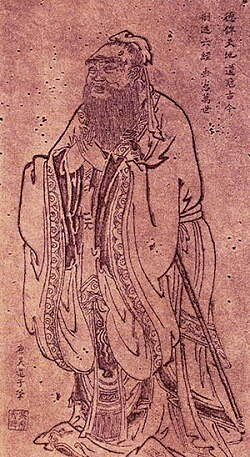
Le confucianisme est la voie principale de la philosophie chinoise et n'a connu que de rares mises à l'écart. Toute éducation se fondait en premier lieu sur les livres formant le « Canon confucianiste » : dont le Shi Jing ou Livre des Poèmes, le Yi Jing ou Livre des Mutations, les Annales de Lu, les Entretiens de Confucius et le livre de Mencius. Presque toute la production savante en Chine peut s'interpréter comme une suite de commentaires sur ces œuvres vénérées comme étant l'essence de l'esprit chinois. Presque tous les mouvements de pensée confucianiste se présentaient comme ayant renoué avec la vraie pensée du Sage. Entre les « réalistes » comme Xun Zi et les partisans de son pendant « idéaliste » Mencius, plus tard entre Wang Yangming et Zhu Xi, des tendances ont émergé et débattu de la pensée du maître, enrichissant la philosophie de nouveaux concepts et de nouvelles interprétations. C'est la lignée de Mencius que Zhu Xi va privilégier et ses commentaires seront ceux considérés comme orthodoxes, c'est-à-dire comme références, par les examinateurs impériaux des dynasties Ming et Qing (la dernière).
Le néo-confucianisme
[modifier | modifier le code]Le néo-confucianisme désigne un développement tardif et éloigné du confucianisme, mais possède des racines autres que celle du confucianisme. Il commença son développement sous la dynastie des Song et parvint à sa plus grande expansion sous celle des Ming. On en retrouve des traces dès la dynastie des Tang.
Ce courant de pensée eut une grande influence en Orient, particulièrement en Chine, au Japon et en Corée. Zhu Xi est considéré comme le plus grand maître néo-confucianiste des Song, tandis que Wang Yangming est le plus fameux des maîtres professant sous les Ming. Mais il existe des conflits entre les écoles de ces deux penseurs.
Le taoïsme
[modifier | modifier le code]{kind=link}
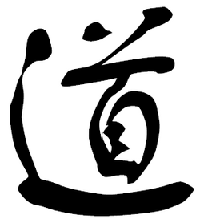
Le taoïsme, une religion, une philosophie[60] ?
Le terme « taoïsme » recouvre des textes, des auteurs, des croyances et pratiques, et même des phénomènes historiques qui ont pu se réclamer les uns des autres, répartis sur 2 500 ans d’histoire.
La catégorie « Taoïsme » est née sous la dynastie Han (200 av. J.-C. à 200), bien après la rédaction des premiers textes, du besoin de classer les fonds des bibliothèques princières et impériales. Dào jiā (道家) ou dào jiào (道教), « école taoïste », distingue à l’époque une des écoles philosophiques de la période des Royaumes combattants (500 av. J.-C. à 220 av. J.-C.). École est ici à entendre dans son sens grec, voire pythagoricien, d’une communauté de pensée s’adonnant aussi à une vie philosophique ; n'y voir qu’un courant intellectuel est un anachronisme moderne. Mais cette école ne fut sans doute que virtuelle, car ses auteurs, dans la mesure où ils ont vraiment existé, ne se connaissaient pas forcément, et certains textes sont attribués à différentes écoles selon les catalogues.
Durant la période des Trois Royaumes (220-265), les termes dào jiā (道家) et dào jiào (道教) divergent, le premier désignant la philosophie et le second la religion. Car la catégorie a vite englobé des croyances et pratiques religieuses d’origine diverse : « le taoïsme n’a jamais été une religion unifiée et a constamment été une combinaison d’enseignements fondés sur des révélations originelles diverses […] il ne peut être saisi que dans ses manifestations concrètes »[61].
Le taoïsme est-il une philosophie ou une religion ? Les deux, peut-on dire. Les conceptions antiques du Zhuangzi (Tchouang Tseu) et du Dao De Jing (Tao Te King) sont évoquées car ces textes continuent d’inspirer la pensée chinoise, ainsi que l’Occident, avec des thèmes comme le Dao, la critique de la pensée dualiste, de la technique, de la morale ; dans un éloge de la nature et de la liberté. On trouvera aussi un exposé sur les pratiques taoïstes, concentré sur le Moyen Âge chinois (les six dynasties, 200-400). La période permet de révéler des techniques mystiques, des idées médicales, une alchimie, des rites collectifs. Leur élaboration a commencé bien avant et s’est poursuivie ensuite, mais ce moment permet d’en offrir un tableau plus riche, et plus attesté. Il en résulte un panorama large, fondé sur des textes et des commentaires récents, afin que chacun puisse se faire son idée du taoïsme comme cela se fit par le passé, mais en privilégiant les sources les plus significatives, les plus évocatrices.
Le néo-taoïsme
[modifier | modifier le code]Xuanxue 玄學, Hsuan Hsue ou néo-taoïsme désigne un courant de pensée philosophique et culturel chinois. Celui-ci s'est créé lors du démantèlement de l'empire Han, au IIIe siècle de notre ère. Les philosophes de ce courant ont développé une interprétation métaphysique cohérente du Dao De Jing, du Zhuangzi et du Yi Jing, dans laquelle le dao, identifié au wu (rien ou vide), est l’origine ontologique de toutes choses. Leurs commentaires et éditions ont vite fait autorité et exercé une influence déterminante sur la façon dont ces ouvrages seront interprétés par les générations ultérieures.
Sa composante culturelle essentielle est le qingtan (« pure conversation »), sorte de joute oratoire codifiée dont les thèmes, souvent philosophiques, évitaient les sujets brûlants de la politique contemporaine. À cette pratique était associé un style de vie individualiste, hédoniste et anti-conformiste.
Les Cent Écoles
[modifier | modifier le code]Sous cette désignation, on retrouve quantité de doctrines, avec, entre autres :
- le légisme de Shang Yang ou Han Fei Zi, qui est une doctrine purement politique, très autoritaire, ressemblant fort au totalitarisme ;
- le moïsme ou mohisme, fondé par Mo Zi (Mo-tseu), né en réaction au confucianisme ;
- l'École des Noms, ou des Logiciens, s'intéresse au langage et aux relations logiques qu'il décrit, dans le but de convaincre.
La philosophie japonaise
[modifier | modifier le code]La philosophie japonaise (en japonais 日本哲学, Nihon tetsugaku) se situe dans le prolongement de la philosophie chinoise, le plus généralement par l'importation, via la Corée, de la culture chinoise durant le Moyen Âge. Le Japon s'est en effet approprié le Bouddhisme et le Confucianisme. La religion traditionnelle nippone, le Shintoïsme, est entrée en dialogue avec ces différentes traditions importées. Pour cette religion il existe des divinités ou esprits, appelés Kami 神, qui se retrouvent dans tout objet naturel (chute d'eau, arbre…), phénomène naturel (arc-en-ciel, typhon…), objet sacré… On peut mettre en parallèle les huacas incas pour mieux cerner ce que représentent les Kami.
Les budō 武道 (bu, la guerre ; do, la voie) sont des arts martiaux (judo, karaté, aïkido) d'inspiration bouddhiste zen.
La philosophie indienne
[modifier | modifier le code]{kind=link}
On définit classiquement deux sortes de philosophies indiennes : les philosophies āstika (आस्तिक en devanāgarī), qui suivent les Veda (hindouisme…) et les philosophies nāstika (नास्तिक) que sont le jaïnisme, le bouddhisme et le Cārvāka, qui les rejettent. Pour ces dernières, on se reportera aux articles qui les concernent[62].
Les différentes écoles āstika
[modifier | modifier le code]On distingue traditionnellement six écoles orthodoxes que sont le Mīmāṃsā, le Nyāya, le Sāṃkhya, le Vaiśeṣika, le Vedānta et le Yoga de Patañjali[63]. Ces écoles sont aussi connues sous le terme sanskrit darśana qui signifie « point de vue doctrinal »[64].
Le Nyâya
[modifier | modifier le code]L'école de Nyâya (en sanskrit न्याय, nyāya) de spéculation philosophique est basée sur un texte appelé le Nyâya Sûtra. Il a été composé par Gautama Aksapada (à ne pas confondre avec Siddhârtha Gautama, le fondateur du bouddhisme), vers le IVe ou Ve siècle av. J.-C. La contribution importante apportée par cette école est sa méthode. Elle est basée sur un système de logique qui a été plus tard adopté par la plupart des autres écoles indiennes (orthodoxes ou non), de la même manière qu'on peut dire que la science, la religion et la philosophie occidentales sont en grande partie basées sur la logique aristotélicienne.
Le Vaiçeshika
[modifier | modifier le code]Le système de Vaisheshika (ou Vaiçeshika, en sanskrit वैशेषिक, vaiśeṣika), fondé par la sage Kanada, postule un pluralisme atomique. Suivant les préceptes de cette école de pensée, tous les objets de l'univers physique, les substances matérielles, sont réductibles à un certain nombre d'atomes, sauf les cinq substances immatérielles : le temps, l'espace, l'éther (âkâsha) l'esprit et l'âme. Les atomes constitutifs des substances matérielles sont les atomes de feu, de terre, d'air et d'eau.
Le Sāṃkhya
[modifier | modifier le code]Le Sāṃkhya (sanskrit en devanāgarī : सांख्य) est généralement considéré comme le plus vieux des systèmes philosophiques indiens[65], il aurait été fondé au VIIe siècle av. J.-C. par Kapila, ou trois siècles plus tôt, selon A. Daniélou. Il s'agit, historiquement, de la première description connue du modèle complet de l'univers et des constituants de l'homme sous forme de principes, à la fois scientifique et métaphysique. Sa philosophie considère l'univers comme se composant de trois réalités éternelles que sont le principe de l'espace (âkâsha), le principe de l'intelligence (Puruṣa), le principe de la nature (Prakriti) et de vingt-deux autres principes. C'est à partir du principe de la nature influencé indirectement par Purusa et ses trois qualités inhérentes que sont sattva, rajas et tamas en déséquilibres que se développe la création entière.
Le Vedānta
[modifier | modifier le code]L'école d'Uttara Mimamsa (nouvelle recherche), généralement connue sous le nom de Vedānta (en sanskrit वेदअन्त, vedānta), se concentre sur les enseignements philosophiques des Upaniṣad plutôt que sur les injonctions ritualistes des Brâhmanas. Mais il y a plus de cent Upanishads qui ne forment pas un système unifié. Leur systématisation a été entreprise par Badarayana, dans un travail appelé Vedānta Sūtra.
La manière obscure dont les aphorismes des textes du Vedānta sont rédigés laisse la porte grande ouverte pour une multitude d'interprétations. Cela a entraîné une prolifération des écoles du Vedānta. Chacune de ces dernières a interprété à sa façon les textes et a produit sa propre série de sous-commentaires — tout en prétendant être seule fidèle à l'original.
Les différentes écoles nāstika
[modifier | modifier le code]On distingue traditionnellement trois écoles non orthodoxes que sont le jaïnisme, le bouddhisme et le Cārvāka.
Le jaïnisme
[modifier | modifier le code]Le « Jaïnisme » est une philosophie indienne basée sur la non-violence (ahimsa) ou respect de toute vie (humaine, animale, végétale) et sur la tolérance (anekantavada) ou reconnaissance de la multiplicité des points de vue. Il implique trois grands principes que sont :
- la vision juste des réalités (tattvas),
- la conduite juste,
- la connaissance juste.
Son principal grand maître philosophique et spirituel ou 24° Tirthankara a été Vardhamana dit Mahavira (le grand héros) qui a vécu en Inde aux VIe et Ve siècles av. J.-C.[66].
Le bouddhisme
[modifier | modifier le code]Le bouddhisme est l’un des grands systèmes de pensée et d’action orientaux, né en Inde au VIe siècle av. J.-C. Il est fondé sur les Trois Joyaux : les bouddhistes déclarent prendre refuge dans le Bouddha, le fondateur du bouddhisme, dans le Dharma, la doctrine du Bouddha, et dans le Sangha, la communauté des adeptes[67].
À l’origine, le bouddhisme n’est pas vraiment une philosophie ou une religion, mais une « leçon de choses » (dhamma en pali, dharma en sanskrit), ce terme désignant à la fois la réalité, sa loi, et son exposé. De plus lorsqu’on parle de dharmas on désigne diverses lois naturelles particulières.
Les quatre nobles vérités qui sont à l’origine du bouddhisme sont :
- la vérité de la souffrance ou de l’insatisfaction inhérente ;
- la vérité de l’origine de la souffrance engendrée par le désir et l’attachement ;
- la vérité de la possibilité de la cessation de la souffrance par le détachement, entre autres ;
- et finalement la vérité du chemin menant à la cessation de la souffrance, qui est la voie médiane du noble sentier octuple.
Cependant ces enseignements classiques, et de portées spirituelles plutôt que philosophiques, ne sont que le point de départ de ce qui deviendra une riche pluralité de traditions philosophiques et religieuses. Après tout le bouddhisme avait « conquis » l'ensemble de l’Asie, du Japon jusqu’à l’Afghanistan, intégrant ou s’adaptant à ces différentes cultures. En philosophie particulièrement, tout le spectre des positions et options possibles a, à un moment ou l’autre, été l’objet d’élaborations et de débats. Il a donc connu son « réalisme », son « atomisme », son « nominalisme », etc.
L’hindouisme, qui partage un certain arrière-plan philosophique avec le bouddhisme, présente lui aussi une telle variété. Pareillement, et à l’instar de la scolastique occidentale, toute philosophie s’inscrit dans le cadre de la religion. Plus précisément, les philosophies bouddhistes ne perdent jamais de vue les préoccupations sotériologiques.
Au terme de ce processus historique, il ne subsiste plus que deux grandes écoles philosophiques, particulièrement dans le bouddhisme dit du mahāyāna[68], ce sont le Cittamātra (esprit seulement, rien qu'esprit), et le Madhyamaka (voie du milieu).
Le Cārvāka
[modifier | modifier le code]La philosophie perse
[modifier | modifier le code]Il existe d'antiques relations entre les Veda indiennes et les Avesta mèdes. Les deux principales familles philosophiques traditionnelles indo-iraniennes étaient déterminées par deux différences fondamentales : dans leurs implications sur la position de l'être humain dans la société et leur vision du rôle des femmes et des hommes dans l'univers. La première charte des droits humains (droits fondamentaux de la personne humaine) par Cyrus II (dit aussi Cyrus le Grand) est vue comme un reflet des questions et pensées exprimées par Zarathoustra, et développées dans les écoles de pensée zoroastriennes.
- le zoroastrisme dérive du nom de Zoroastre déformé par les Grecs aux dépens du véritable nom, Zarathoustra. Son autre appellation, le mazdéisme, dérive quant à lui du nom du dieu vénéré, Ahura Mazdā. Ce courant de pensée fut fondé au cours du Ier millénaire av. J.-C. ;
- le manichéisme est une religion syncrétique apparue au IIe siècle de notre ère, dont le nom provient de son fondateur, Mani ;
- le mazdakisme est un courant religieux fondé au Ve siècle. Il doit son nom à son fondateur, Mazdak.
La philosophie africaine
[modifier | modifier le code]S'il faut dire que l'expression a posé un problème du même acabit que celui constaté avec l'expression « philosophie chinoise », il faut reconnaître que le débat sur la philosophie africaine a beaucoup évolué à la fin du 20e et au début du 21e siècle. Le terme de « philosophie africaine » est donc utilisé de différentes manières par différents philosophes. Bien qu'une majorité de philosophes africains étudient dans des domaines tels que la métaphysique, l'épistémologie, la morale et la philosophie politique, une question qui accapare nombre d'entre eux se situe sur la nature de la philosophie africaine elle-même. Un des points centraux du désaccord est sur le terme « africain » : désigne-t-il le contenu de la philosophie ou l'identité des philosophes ? La philosophie africaine puise à la fois dans l'héritage traditionnel du continent, notamment dans l'enseignement de l'Égypte pharaonique, et dans l’héritage de la philosophie occidentale.
Place des femmes en philosophie
[modifier | modifier le code].jpg?uselang=fr){kind=link}
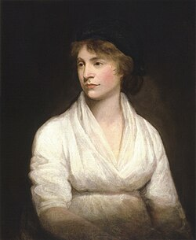
Bien que les hommes aient généralement dominé le discours philosophique, les femmes philosophes se sont engagées dans cette discipline tout au long de l'histoire. La liste des femmes philosophes à travers l'histoire est vaste. Parmi les exemples anciens, citons Hipparchia (active vers 325 avant J.-C.) et Arété de Cyrène (active aux 5e-4e siècles avant J.-C.).
Gilles Ménage en cite tant dans son Histoire des femmes philosophes que « le nombre des femmes qui ont écrit est si grand qu'on pourrait faire un long recueil de leurs noms »[69].
Certaines femmes philosophes ont été acceptées au cours des époques médiévale et moderne, mais aucune n'a fait partie du canon occidental avant les 20e et 21e siècles[réf. nécessaire]. Parmi ces dernières on trouve : G. E. M. Anscombe, Hannah Arendt, Bell Hooks, Simone de Beauvoir, Simone Weil et Susanne Langer sont entrées dans le canon[70],[71]. Au début des années 1800, certains collèges et universités du Royaume-Uni et des États-Unis ont commencé à admettre des femmes, produisant ainsi davantage de femmes universitaires. Néanmoins, les rapports du ministère américain de l'éducation des années 1990 indiquent que peu de femmes se retrouvent en philosophie et que la philosophie est l'un des domaines des sciences humaines où la proportion de femmes est la plus faible, les femmes représentant entre 17 % et 30 % du corps enseignant de philosophie selon certaines études.
Parmi les philosophes éminentes du 21e siècle on trouve : Judith Butler, Gayatri Chakravorty Spivak, Martha Nussbaum, Onora O'Neill et Nancy Fraser, Julia Kristeva, Nell Noddings, Carol Gilligan, et Donna Harraway[72],[73].
Critiques
[modifier | modifier le code]{kind=link}
Notes et références
[modifier | modifier le code]Notes
[modifier | modifier le code]- ↑ Respectivement dans la Méthodologie de la Critique de la raison pure et dans le Tractatus logico-philosophicus.
- ↑ Ceci n'empêche naturellement pas la philosophie de faire usage de connaissances et résultats établis grâce à l'expérimentation. Ceci est vrai tout particulièrement de la philosophie de l'esprit. Il n'empêche que, parmi les représentants de ce courant, aucun n'effectue lui-même des expérimentations. En outre, si on compare l'importance de l'expérimentation pour la physique et pour la philosophie par exemple, on voit qu'on ne peut pas faire de la philosophie une discipline expérimentale.
- ↑ Ainsi Lacan, Foucault, Althusser et même Derrida, pour ne citer qu'eux, ont pris appui, souvent indirectement ou allusivement sur Lettre sur l'humanisme, pour alimenter, ou soutenir leurs propres critiques du concept d'humanisme et du rôle de la subjectivité mais en déplaçant en leur faveur (c'est-à-dire dans un sens plus ou moins structuraliste ou déconstructionniste) le propos heideggerien Dominique Janicaud Du bon usage de la Lettre sur l'humanisme à Heidegger et la question de l'humanisme Faits, concepts débat direction Bruno Pinchard Themis Philosophie PUF 2005 page 222.
Références
[modifier | modifier le code]- ↑ Sur l'origine du terme, voir : Anne-Marie Malingrey, Philosophia. Étude d'un groupe de mots dans la littérature grecque, des Présocratiques au IVe siècle après J.-C., Paris, Klincksieck, 1961.
- ↑ Informations lexicographiques [archive] et étymologiques [archive] de « Philosophie » dans le Trésor de la langue française informatisé, sur le site du Centre national de ressources textuelles et lexicales.
- ↑ Jean-Paul II, Fides et ratio, § 47
- ↑ Jean-François Mattéi, « Les deux souches de la métaphysique chez Aristote et Platon », Philosophique, no 3, , p. 3-18 (ISSN 0751-2902 et 2259-4574, DOI 10.4000/philosophique.280, lire en ligne [archive], consulté le ).
- Revenir plus haut en : 1 2 André Comte-Sponville, Dictionnaire philosophique (article sur philomag.com) [archive].
- ↑ « Qu’est-ce que la philosophie ? Définitions d’Aristote à Descartes [archive] », sur la-philosophie.com, (consulté le )
- ↑ « La philo-bonheur relève d’un totalitarisme soft et radieux », Le Matin dimanche, 15 février 2015. [lire en ligne [archive]]
- ↑ R. Bödéus, "philosophía", in (dir.) Jacob, André, Encyclopédie philosophique universelle, vol. 2 : Les notions philosophiques, tome 2, Paris, PUF.
- ↑ ALQUIÉ, F., Signification de la philosophie, Paris, 1971.
- ↑ Héraclide du Pont, fragment 88.
- ↑ Monique Dixsaut, Le naturel philosophe. Essai sur les dialogues de Platon, p. 9.
- ↑ Anatole Bailly ; 2020 : Hugo Chávez, Gérard Gréco, André Charbonnet, Mark De Wilde, Bernard Maréchal & contributeurs, « Le Bailly [archive] », (consulté le ).
- ↑ Platon, La République, II, 376b.
- ↑ Le sage est celui qui possède la sagesse, l'ami est celui qui la désire. Platon écrit dans le Phèdre (278d) que, pour parler proprement, seul un dieu possède la sagesse.
- ↑ voir Phédon
- ↑ Emmanuel Lévinas, Totalité et infini: essai sur l'extériorité, M. Nijhoff, (ISBN 978-90-247-5105-1, lire en ligne [archive])
- ↑ Voir sur ce sujet Pierre Hadot, Qu'est-ce que la philosophie ?.
- ↑ René Descarte, Les principes de la philosophie, Préface, p. 15
- ↑ De la brièveté de l'âme de Sénèque, le Manuel d'Épictète, les Pensées pour moi-même de Marc Aurèle.
- ↑ Voir la correspondance avec Élisabeth et le Livre IV du Discours de la méthode.
- ↑ Voir les Livres IV et V de l'Éthique.
- ↑ E. Brehier, La philosophie de Plotin, p. 121, Éd. Vrin, (ISBN 978-2-7116-8024-5).
- ↑ Merleau-Ponty Maurice, Éloge de la philosophie, Paris, Éditions Gallimard, (ISBN 978-2-07-035075-9).
- ↑ Pierre Hadot, La philosophie comme manière de vivre, Albin Michel, , 283 p. (ISBN 978-2-226-12261-2).
- ↑ Hadot 2001, p. 176.
- ↑ Hadot 2001, p. 179.
- ↑ Hadot 2001, p. 180.
- ↑ Hadot 2001, p. 262.
- ↑ Hadot 2001, p. 263.
- ↑ Georges Politzer, Principes élémentaires de philosophie, Paris, Les Éditions sociales, , 286 p., p. 83-113, Partie 2 Le matérialisme philosophique.
- ↑ Sur l’opposition entre philosophie continentale et analytique voir un texte de Pascal Engel : « petits déjeuners continentaux et goûters analytiques [archive] » (consulté le ).
- ↑ Sur la logique de Leibniz voir l'ouvrage classique de Louis Couturat, La logique de Leibniz, réed. Olms, 1969
- ↑ Voir le Lachès ou le Protagoras par exemple.
- ↑ Voir la première Méditations métaphysiques.
- ↑ Sur la conception de la philosophie comme création, voir Gilles Deleuze, Pourparlers, 1972-1990, Ed. de Minuit, 1990, p. 168).
- ↑ Dès l'Antiquité : voir le cinquième livre de l'Éthique à Nicomaque d'Aristote et à la célèbre distinction entre les différents sens du mot justice.
- ↑ Pour des textes qui livrent des définitions classiques de la philosophie par des philosophes, voir entre autres : Le Banquet et l'Apologie de Socrate de Platon ; le dixième livre de l'Éthique à Nicomaque ; De la constance du sage de Sénèque ; le cinquième livre de l'Éthique de Spinoza.
- ↑ Dialectique de la raison d'Adorno et Max Horkheimer et la Généalogie de la morale de Nietzsche.
- ↑ Sur cette période voir : Histoire de la philosophie d'Émile Bréhier, Qu'est-ce que la philosophie antique de Pierre Hadot
- ↑ Clémence Ramnoux, Les Présocratiques, p. 445, in Histoire de la philosophie publié par Brice Parain, Paris, 1969 (ISBN 978-2-07-040777-4)
- ↑ La République, Livre VI et VII
- ↑ Cette question reste en tout cas très discutée. Cf. José Kany-Turpin, introduction à sa traduction du De la nature de Lucrèce, 1993, édition de poche revue, 1998, Garnier-Flammarion (p. 15-18).
- ↑ Porphyre de Tyr, Vie de Plotin III, Éd. Belles Lettres : « Il arriva à posséder si bien la philosophie, qu’il tâcha de prendre une connaissance directe de celle qui se pratique chez les Perses, et de celle qui est en honneur chez les Indiens. »
- ↑ Alain de Libera, La philosophie médiévale, Presses universitaires de France, , 547 p.
- ↑ Voir pour plus de détails, ce site [archive]
- ↑ Sur cette période voir les ouvrages d'Étienne Gilson : La philosophie au Moyen Âge, 2 volumes, Paris, 1922.
- ↑ Christian Wenin, « La signification des universaux chez Abélard », Revue Philosophique de Louvain, vol. 80, no 47, , p. 414-448 (ISSN 0035-3841, DOI 10.3406/phlou.1982.6197, lire en ligne [archive], consulté le )
- ↑ C'est ce que des commentateurs comme Marie-Dominique Chenu appellent la renaissance du Moyen Âge (voir Introduction à l'étude de saint Thomas d'Aquin)
- ↑ Voir ce site pour de plus amples informations [archive]
- Revenir plus haut en : 1 2 Mélanie Fabre, Marie Linos et Margot Elmer, « Les femmes dans les sciences de l’homme : obstacles systémiques et stratégies de contournement (France, xix e - xx e siècle: », Les Études Sociales, vol. n° 177, no 1, , p. 7–30 (ISSN 0014-2204, DOI 10.3917/etsoc.177.0007, lire en ligne [archive], consulté le )
- ↑ Sur cette période voir Pascal Engel, La dispute, une introduction à la philosophie analytique, Paris, Minuit, 1997, Scott Soames, Philosophical Analysis in the Twentieth Century, Volume 1 : The Dawn of Analysis, Princeton, 2003 et Philosophical Analysis in the Twentieth Century, Volume 2 : The Age of Meaning, Princeton, 2003
- ↑ Voir sur sujet Levinas, Théorie de l'intuition dans la phénoménologie de Husserl, Paris, 1930
- ↑ Paul-Laurent Assoun, Freud, la philosophie et les philosophes, Paris, PUF, 1976, p. 6.
- ↑ Johannes Angermuller, Le Champ de la Théorie. Essor et déclin du structuralisme en France, Paris, Hermann, ; Johannes Angermuller (2015) : Why There Is No Poststructuralism in France. The Making of An Intellectual Generation. London: Bloomsbury.
- ↑ Tels Hannah Arendt dans Les Origines du totalitarisme, traduits en trois volumes ; Carl Schmitt, La dictature, Seuil, Paris, 2000 (trad. par Mira Köller et Dominique Séglard) ; Raymond Aron, Démocratie et totalitarisme, éd. Gallimard, 1965.
- ↑ Silberstein Marc (dir.), Matériaux philosophiques et scientifiques pour un matérialisme contemporain : Sciences, ontologie, épistémologie, Paris, Éditions matériologiques, , 1017 p. (ISBN 978-2-919694-26-6)
- ↑ « Sur les chemins de l'acte d'être [archive] », sur bertrandrioux8.blogspot.fr, (consulté le )
- ↑ « L'enseignement de la philosophie en Europe et en Amérique du Nord [archive] », sur unesdoc.unesco.org, (consulté le )
- ↑ Annabelle Laurent, « Pourquoi la France philosophe ? », Slate, (lire en ligne [archive])
- ↑ Sur le Taoïsme voir Marcel Granet, Trois études sociologiques sur la Chine, « Remarques sur le Taoïsme ancien [archive] », 1925 et La Pensée chinoise, 1934 (rééd. Albin Michel, coll. « L'Évolution de l’humanité [archive] », 1999) 1925, Henri Maspéro, Le Taoïsme et les Religions chinoises [archive], 1950, NRF (Gallimard), coll. « Bibliothèque des Histoires » (rééd. Gallimard, 1990)
- ↑ Isabelle Robinet, « Histoire du taoïsme : des origines au XIVe siècle »(Archive.org • Wikiwix • Google • Que faire ?). Pour la Stanford Encyclopedia of Philosophy : « Le taoïsme est un terme-parapluie qui recouvre un ensemble de doctrines [philosophiques] qui ont en commun une orientation similaire. Le terme taoïsme est également associé à différents courants religieux naturalistes ou mystiques… Le résultat est que [c’]est un concept essentiellement malléable. La fameuse question de Creel : « Qu’est-ce que le taoïsme ? » reste toujours aussi difficile. » (Voir l'article [archive]).
- ↑ Sur la philosophie indienne voir Surendranath N. Dasgupta: A History of Indian Philosophy (cinq volumes), Cambridge, 1922 et A.K. Warder: Outline of Indian Philosophy, Delhi: Motilal Banarsidass, 1971 (ISBN 978-0-89581-372-5)
- ↑ Essai sur la philosophie des hindous. Henry Thomas Colebrooke, Guillaume Pauthier. Éd. Firmin Didot, Paris, 1834, p. 1-2
- ↑ The Sanskrit Heritage Dictionary de Gérard Huet
- ↑ Indian philosophy: an introduction to Hindu and Buddhist thought. Richard King. Éd. Edinburgh University Press, 1999, p. 62 (ISBN 9780748609543)
- ↑ Voir : L'Inde Classique, volume III de Louis Renou et Jean Filliozat, réimpression de l'École française d'Extrême-Orient, Paris, 1996
- ↑ Sur le bouddhisme voir : Samuel Bercholz et Sherab Chödzin Kohn, Pour comprendre le bouddhisme : une initiation à travers les textes essentiels, Paris, Pocket, , 428 p. (ISBN 978-2-266-07633-3) et Philippe Cornu, Dictionnaire encyclopédique du bouddhisme, Paris, Éditions du Seuil, , 841 p. (ISBN 978-2-02-036234-4)
- ↑ L’autre grande tradition dite du theravāda évite soigneusement toutes discussion métaphysique, ou philosophique abstraite, et se concentre sur les aspects méditationnels
- ↑ Gilles Ménage (trad. Manuella Vaney, préf. Claude Tarrène), Histoire des femmes philosophes, Paris, Arléa, coll. « Poche-Retour aux grands textes », (1re éd. 2003), 108 p. (ISBN 978-2-86959-719-8)
- ↑ (en) John Haldane, « In Memoriam: G. E. M. Anscombe (1919-2001) », The Review of Metaphysics, vol. 53, no 4, , p. 1019–1021 (ISSN 0034-6632, lire en ligne [archive], consulté le )
- ↑ (en) Jane Duran, Eight women philosophers : theory, politics, and feminism, (ISBN 978-0-252-09105-6, 0-252-09105-1 et 1-283-25098-5, OCLC 785782176)
- ↑ (en) James Barham et Dr Brian Carlson, « Influential Women in Philosophy From the Last 10 Years [archive] », sur academicinfluence.com (consulté le )
- ↑ (en) Charlotte Witt, Lisa Shapiro, Christina Van Dyke et Lydia L. Moland, « Feminist History of Philosophy », dans The Stanford Encyclopedia of Philosophy, Metaphysics Research Lab, Stanford University, (lire en ligne [archive])
Voir aussi
[modifier | modifier le code]Bibliographie
[modifier | modifier le code]Textes philosophiques majeurs par ordre chronologique
[modifier | modifier le code]Antiques
[modifier | modifier le code]- Anonyme, Rig-Veda, 1500 à 900 av. J.-C.
- Anonyme, Yi Jing, 1027 à 256 av. J.-C.
- Lao Tseu, Dao de jing, 600 av. J.-C.
- Confucius, Entretiens, 479 av. J.-C. à 221 apr. J.-C.
- Platon, La république, 387-370 av. J.-C.
- Platon, Apologie de Socrate, 380 av. J.-C.
- Aristote, Éthique à Nicomaque, 350 av. J.-C.
- Aristote, La métaphysique, 330 av. J.-C.
- Anonyme, Mahâbhârata (en particulier le passage de Bhagavad-Gîtâ), 300 av. J.-C. à 600 apr. J.-C.
- Épicure, Lettres, 296-290 av. J.-C.
- Épictète, Manuel, 125 apr. J.-C.
- Sextus Empiricus, Esquisses pyrrhoniennes, 200.
- Diogène Laërce, Vies, doctrines et sentences des philosophes illustres, (Livre VI pour les cyniques), 250.
- Plotin, Les ennéades, 254-270.
Médiévaux
[modifier | modifier le code]- Augustin, Les confessions, 397-401.
- Thomas d'Aquin, Somme théologique, 1266-1273.
Modernes
[modifier | modifier le code]- Nicolas Machiavel, Le Prince, 1553.
- René Descartes, Méditations métaphysiques, 1641.
- Thomas Hobbes, Léviathan, 1651.
- Baruch Spinoza, Éthique, 1677.
- John Locke, Traité du gouvernement civil, 1690.
- Gottfried Wilhelm Leibniz, Monadologie, 1714.
- David Hume, Traité de la nature humaine, 1739-1740.
- Montesquieu, De l'esprit des lois, 1748.
- Jean-Jacques Rousseau, Du contrat social, 1762.
- Emmanuel Kant, Critique de la raison pure, 1781.
Contemporains
[modifier | modifier le code]- Georg Wilhelm Friedrich Hegel, Phénoménologie de l'esprit, 1807.
- Arthur Schopenhauer, Le monde comme volonté et comme représentation, 1819.
- Pierre-Joseph Proudhon, Qu'est ce que la propriété ?, 1840.
- Karl Marx, Le Capital, 1867-1894.
- Friedrich Nietzsche, Ainsi parlait Zarathoustra, 1883-1885.
- Bertrand Russell, Problèmes de philosophie, 1912.
- Edmund Husserl, Idées directrices pour une phénoménologie pure et une philosophie phénoménologique, 1913.
- Martin Heidegger, Être et temps, 1927.
- Albert Camus, Le mythe de Sisyphe, 1942.
- Jean-Paul Sartre, L'existentialisme est un humanisme, 1946.
- Hannah Arendt, Condition de l'homme moderne, 1958.
- Jacques Derrida, De la grammatologie, 1967.
- John Rawls, Théorie de la justice, 1971.
- Ivan Illich, La convivialité, 1973.
- Michel Foucault, Surveiller et punir, 1975.
- Edgar Morin, La méthode, 1977-2004.
Définition et histoire de la philosophie
[modifier | modifier le code]- Alain, Éléments de philosophie, Paris, Gallimard, 1916.
- Yvon Belaval, Histoire de la philosophie, Paris, Gallimard, 1972-1974.
- Émile Bréhier, Histoire de la philosophie, Paris, Presses universitaires de France, (ISBN 978-2-13-054396-1).
- Barbara Cassin (dir.), Vocabulaire européen des philosophies : dictionnaire des intraduisibles, Paris, Seuil ; Le Robert, (ISBN 2-02-030730-8).
- François Châtelet, Histoire de la philosophie : idées, doctrines, Paris, Hachette, 1972-1973.
- Henry Corbin et al., Histoire de la philosophie islamique, Paris, Gallimard, 1964.
- Bruno Curatolo et Jacques Poirier, Le style des philosophes, Besançon, Presses universitaires de Franche-Comté, , 390 p. (ISBN 978-2-84867-816-0 et 978-2-84867-192-5, DOI 10.4000/BOOKS.PUFC.26467).
- Denis Huisman et André Vergez (dir.), Histoire des philosophes illustrée par les textes, Paris, Nathan, 1996.
- André Jacob (dir.), Encyclopédie philosophique universelle, Paris, Presses universitaires de France, 1992-1998.
- Karl Jaspers, Introduction à la philosophie, Paris, Plon, 1951.
- Karl Jaspers, Les grands philosophes, Paris, Plon, 1963.
- André Lalande, Vocabulaire technique et critique de la philosophie, Paris, Presses universitaires de France, 2002 (1927) (ISBN 978-2-13-053093-0).
- Maurice Merleau-Ponty, Éloge de la philosophie, Paris, Gallimard, 1953.
Articles connexes
[modifier | modifier le code]Liens externes
[modifier | modifier le code]Définition
[modifier | modifier le code]- Centre national de ressources textuelles et lexicales (CNRTL), « Philosophie [archive] », cnrtl.fr.
- (en) Dictionary.com, « Philosophy [archive] », dictionary.com.
- (en) Dictionnaire de Cambridge, « Philosophy [archive] », dictionary.cambridge.org.
- Jean-François Dortier, « Qu'est-ce que la philosophie ? [archive] », Sciences humaines, 16, 2012.
- Jean-Louis Fauvelle, « Qu'est-ce que la philosophie ? [archive] », Bulletins et mémoires de la Société d'anthropologie de Paris, 1, 1890, p. 323-339.
- (en) Nicholas Joll, « Metaphilosophy [archive] », Internet Encyclopedia of Philosophy, 2017 (2010).
- Jean Zin, « Qu'est-ce que la philosophie ? [archive] », jeanzin.fr, 2006.
Organismes dédiés à la philosophie
[modifier | modifier le code]Ressources diverses
[modifier | modifier le code]- Ressource relative à la santé :
- Ressource relative à l'audiovisuel :
- Notices dans des dictionnaires ou encyclopédies généralistes :
- Site du Centre d'Études en Rhétorique, Philosophie et Histoire des Idées. [archive]
- Astérion, revue de philosophie et d'histoire de la pensée politique [archive]
- Nombreux auteurs classiques à télécharger sur Gallica [archive], ainsi que des manuels :
- Charles Jourdain, Notions de philosophie [archive] ;
- Paul Janet, Traité élémentaire de philosophie [archive] ;
- Victor Cousin, Histoire générale de la philosophie [archive].
- Histoire de la philosophie, Émile Bréhier [archive] (Version électronique).
- Répertoires de sources philosophiques antiques :
- « Bibliotheca Classica Selecta »(Archive.org • Wikiwix • Google • Que faire ?)
- Cnrs [archive]
- Remacle [archive]